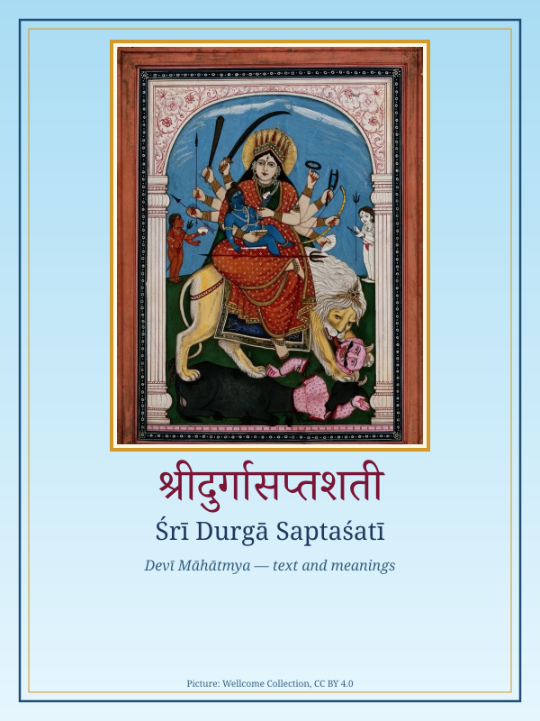

श्रीदुर्गासप्तशती
Devī Māhātmya in Thirteen Chapters
Sanskrit text with translation and word-by-word meanings
This edition presents the thirteen chapters of the Durgā Saptaśatī (Devī Māhātmya) in Devanagari, following the Gītā Press verse numbering.
An English translation and word-by-word meaning are given verse by verse wherever they have been prepared. At present these are complete for Chapter 6; the remaining chapters carry the Sanskrit text, and their meanings will be added as they are proofread.
Use the Contents button to jump to a chapter, the Index of Verses at the end to jump to any verse, the page box to jump to a page, and A− / A+ to change the size of the text.
Chapter 1
मधुकैटभवधो नाम प्रथमोऽध्यायः
Translation and word-by-word meanings for this chapter are in preparation. The Sanskrit text is given below.
1.1
मार्कण्डेय उवाच ॥१॥
1.2
सावर्णिः सूर्यतनयो यो मनुः कथ्यतेऽष्टमः ।
निशामय तदुत्पत्तिं विस्तराद्गदतो मम ॥२॥
1.3
महामायानुभावेन यथा मन्वन्तराधिपः ।
स बभूव महाभागः सावर्णिस्तनयो रवेः ॥३॥
1.4
स्वारोचिषेऽन्तरे पूर्वं चैत्रवंशसमुद्भवः ।
सुरथो नाम राजाभूत्समस्ते क्षितिमण्डले ॥४॥
1.5
तस्य पालयतः सम्यक् प्रजाः पुत्रानिवौरसान् ।
बभूवुः शत्रवो भूपाः कोलाविध्वंसिनस्तदा ॥५॥
1.6
तस्य तैरभवद् युद्धमतिप्रबलदण्डिनः ।
न्यूनैरपि स तैर्युद्धे कोलाविध्वंसिभिर्जितः ॥६॥
1.7
ततः स्वपुरमायातो निजदेशाधिपोऽभवत् ।
आक्रान्तः स महाभागस्तैस्तदा प्रबलारिभिः ॥७॥
1.8
अमात्यैर्बलिभिर्दुष्टैर्दुर्बलस्य दुरात्मभिः ।
कोशो बलं चापहृतं तत्रापि स्वपुरे ततः ॥८॥
1.9
ततो मृगयाव्याजेन हृतस्वाम्यः स भूपतिः ।
एकाकी हयमारुह्य जगाम गहनं वनम् ॥९॥
1.10
स तत्राश्रममद्राक्षीद्द्विजवर्यस्य मेधसः ।
प्रशान्तश्वापदाकीर्णं मुनिशिष्योपशोभितम् ॥१०॥
1.11
तस्थौ कञ्चित्स कालं च मुनिना तेन सत्कृतः ।
इतश्चेतश्च विचरंस्तस्मिन् मुनिवराश्रमे ॥११॥
1.12
सोऽचिन्तयत्तदा तत्र ममत्वाकृष्टमानसः ।
मत्पूर्वैः पालितं पूर्वं मया हीनं पुरं हि तत् ॥१२॥
1.13
मद्भृत्यैस्तैरसद्वृत्तैर्धर्मतः पाल्यते न वा ।
न जाने स प्रधानो मे शूरो हस्ती सदामदः ॥१३॥
1.14
मम वैरिवशं यातः कान् भोगानुपलप्स्यते ।
ये ममानुगता नित्यं प्रसादधनभोजनैः ॥१४॥
1.15
अनुवृत्तिं ध्रुवं तेऽद्य कुर्वन्त्यन्यमहीभृताम् ।
असम्यग्व्ययशीलैस्तैः कुर्वद्भिः सततं व्ययम् ॥१५॥
1.16
सञ्चितः सोऽतिदुःखेन क्षयं कोशो गमिष्यति ।
एतच्चान्यच्च सततं चिन्तयामास पार्थिवः ॥१६॥
1.17
तत्र विप्राश्रमाभ्याशे वैश्यमेकं ददर्श सः ।
स पृष्टस्तेन कस्त्वं भो हेतुश्चागमनेऽत्र कः ॥१७॥
1.18
सशोक इव कस्मात्त्वं दुर्मना इव लक्ष्यसे ।
इत्याकर्ण्य वचस्तस्य भूपतेः प्रणयोदितम् ॥१८॥
1.19
प्रत्युवाच स तं वैश्यः प्रश्रयावनतो नृपम् ॥१९॥
1.20
वैश्य उवाच ॥२०॥
1.21
समाधिर्नाम वैश्योऽहमुत्पन्नो धनिनां कुले ॥२१॥
1.22
पुत्रदारैर्निरस्तश्च धनलोभादसाधुभिः ।
विहीनश्च धनैर्दारैः पुत्रैरादाय मे धनम् ॥२२॥
1.23
वनमभ्यागतो दुःखी निरस्तश्चाप्तबन्धुभिः ।
सोऽहं न वेद्मि पुत्राणां कुशलाकुशलात्मिकाम् ॥२३॥
1.24
प्रवृत्तिं स्वजनानां च दाराणां चात्र संस्थितः ।
किं नु तेषां गृहे क्षेममक्षेमं किं नु साम्प्रतम् ॥२४॥
1.25
कथं ते किं नु सद्वृत्ता दुर्वृत्ताः किं नु मे सुताः ॥२५॥
1.26
राजोवाच ॥२६॥
1.27
यैर्निरस्तो भवाँल्लुब्धैः पुत्रदारादिभिर्धनैः ॥२७॥
1.28
तेषु किं भवतः स्नेहमनुबध्नाति मानसम् ॥२८॥
1.29
वैश्य उवाच ॥२९॥
1.30
एवमेतद्यथा प्राह भवानस्मद्गतं वचः ॥३०॥
1.31
किं करोमि न बध्नाति मम निष्ठुरतां मनः ।
यैः सन्त्यज्य पितृस्नेहं धनलुब्धैर्निराकृतः ॥३१॥
1.32
पतिस्वजनहार्दं च हार्दितेष्वेव मे मनः ।
किमेतन्नाभिजानामि जानन्नपि महामते ॥३२॥
1.33
यत्प्रेमप्रवणं चित्तं विगुणेष्वपि बन्धुषु ।
तेषां कृते मे निःश्वासो दौर्मनस्यं च जायते ॥३३॥
1.34
करोमि किं यन्न मनस्तेष्वप्रीतिषु निष्ठुरम् ॥३४॥
1.35
मार्कण्डेय उवाच ॥३५॥
1.36
ततस्तौ सहितौ विप्र तं मुनिं समुपस्थितौ ॥३६॥
1.37
समाधिर्नाम वैश्योऽसौ स च पार्थिवसत्तमः ।
कृत्वा तु तौ यथान्यायं यथार्हं तेन संविदम् ॥३७॥
1.38
उपविष्टौ कथाः काश्चिच्चक्रतुर्वैश्यपार्थिवौ ॥३८॥
1.39
राजोवाच ॥३९॥
1.40
भगवंस्त्वामहं प्रष्टुमिच्छाम्येकं वदस्व तत् ॥४०॥
1.41
दुःखाय यन्मे मनसः स्वचित्तायत्ततां विना ।
ममत्वं गतराज्यस्य राज्याङ्गेष्वखिलेष्वपि ॥४१॥
1.42
जानतोऽपि यथाज्ञस्य किमेतन्मुनिसत्तम ।
अयं च निकृतः पुत्रैर्दारैर्भृत्यैस्तथोज्झितः ॥४२॥
1.43
स्वजनेन च सन्त्यक्तस्तेषु हार्दी तथाप्यति ।
एवमेष तथाहं च द्वावप्यत्यन्तदुःखितौ ॥४३॥
1.44
दृष्टदोषेऽपि विषये ममत्वाकृष्टमानसौ ।
तत्किमेतन्महाभाग यन्मोहो ज्ञानिनोरपि ॥४४॥
1.45
ममास्य च भवत्येषा विवेकान्धस्य मूढता ॥४५॥
1.46
ऋषिरुवाच ॥४६॥
1.47
ज्ञानमस्ति समस्तस्य जन्तोर्विषयगोचरे ॥४७॥
1.48
विषयाश्च महाभाग यान्ति चैवं पृथक्पृथक् ।
दिवान्धाः प्राणिनः केचिद्रात्रावन्धास्तथापरे ॥४८॥
1.49
केचिद्दिवा तथा रात्रौ प्राणिनस्तुल्यदृष्टयः ।
ज्ञानिनो मनुजाः सत्यं किं तु ते न हि केवलम् ॥४९॥
1.50
यतो हि ज्ञानिनः सर्वे पशुपक्षिमृगादयः ।
ज्ञानं च तन्मनुष्याणां यत्तेषां मृगपक्षिणाम् ॥५०॥
1.51
मनुष्याणां च यत्तेषां तुल्यमन्यत्तथोभयोः ।
ज्ञानेऽपि सति पश्यैतान् पतङ्गाञ्छावचञ्चुषु ॥५१॥
1.52
कणमोक्षादृतान् मोहात्पीड्यमानानपि क्षुधा ।
मानुषा मनुजव्याघ्र साभिलाषाः सुतान् प्रति ॥५२॥
1.53
लोभात् प्रत्युपकाराय नन्वेतान् किं न पश्यसि ।
तथापि ममतावर्त्ते मोहगर्ते निपातिताः ॥५३॥
1.54
महामायाप्रभावेण संसारस्थितिकारिणा ।
तन्नात्र विस्मयः कार्यो योगनिद्रा जगत्पतेः ॥५४॥
1.55
महामाया हरेश्चैषा तया सम्मोह्यते जगत् ।
ज्ञानिनामपि चेतांसि देवी भगवती हि सा ॥५५॥
1.56
बलादाकृष्य मोहाय महामाया प्रयच्छति ।
तया विसृज्यते विश्वं जगदेतच्चराचरम् ॥५६॥
1.57
सैषा प्रसन्ना वरदा नृणां भवति मुक्तये ।
सा विद्या परमा मुक्तेर्हेतुभूता सनातनी ॥५७॥
1.58
संसारबन्धहेतुश्च सैव सर्वेश्वरेश्वरी ॥५८॥
1.59
राजोवाच ॥५९॥
1.60
भगवन् का हि सा देवी महामायेति यां भवान् ॥६०॥
1.61
ब्रवीति कथमुत्पन्ना सा कर्मास्याश्च किं द्विज ।
यत्प्रभावा च सा देवी यत्स्वरूपा यदुद्भवा ॥६१॥
1.62
तत्सर्वं श्रोतुमिच्छामि त्वत्तो ब्रह्मविदां वर ॥६२॥
1.63
ऋषिरुवाच ॥६३॥
1.64
नित्यैव सा जगन्मूर्तिस्तया सर्वमिदं ततम् ॥६४॥
1.65
तथापि तत्समुत्पत्तिर्बहुधा श्रूयतां मम ।
देवानां कार्यसिद्ध्यर्थमाविर्भवति सा यदा ॥६५॥
1.66
उत्पन्नेति तदा लोके सा नित्याप्यभिधीयते ।
योगनिद्रां यदा विष्णुर्जगत्येकार्णवीकृते ॥६६॥
1.67
आस्तीर्य शेषमभजत् कल्पान्ते भगवान् प्रभुः ।
तदा द्वावसुरौ घोरौ विख्यातौ मधुकैटभौ ॥६७॥
1.68
विष्णुकर्णमलोद्भूतौ हन्तुं ब्रह्माणमुद्यतौ ।
स नाभिकमले विष्णोः स्थितो ब्रह्मा प्रजापतिः ॥६८॥
1.69
दृष्ट्वा तावसुरौ चोग्रौ प्रसुप्तं च जनार्दनम् ।
तुष्टाव योगनिद्रां तामेकाग्रहृदयः स्थितः ॥६९॥
1.70
विबोधनार्थाय हरेर्हरिनेत्रकृतालयाम् ।
विश्वेश्वरीं जगद्धात्रीं स्थितिसंहारकारिणीम् ॥७०॥
1.71
निद्रां भगवतीं विष्णोरतुलां तेजसः प्रभुः ॥७१॥
1.72
ब्रह्मोवाच ॥७२॥
1.73
त्वं स्वाहा त्वं स्वधा त्वं हि वषट्कारः स्वरात्मिका ॥७३॥
1.74
सुधा त्वमक्षरे नित्ये त्रिधा मात्रात्मिका स्थिता ।
अर्धमात्रा स्थिता नित्या यानुच्चार्याविशेषतः ॥७४॥
1.75
त्वमेव सन्ध्या सावित्री त्वं देवि जननी परा ।
त्वयैतद्धार्यते विश्वं त्वयैतत् सृज्यते जगत् ॥७५॥
1.76
त्वयैतत् पाल्यते देवि त्वमत्स्यन्ते च सर्वदा ।
विसृष्टौ सृष्टिरूपा त्वं स्थितिरूपा च पालने ॥७६॥
1.77
तथा संहृतिरूपान्ते जगतोऽस्य जगन्मये ।
महाविद्या महामाया महामेधा महास्मृतिः ॥७७॥
1.78
महामोहा च भवती महादेवी महेश्वरी ।
प्रकृतिस्त्वं च सर्वस्य गुणत्रयविभाविनी ॥७८॥
1.79
कालरात्रिर्महारात्रिर्मोहरात्रिश्च दारुणा ।
त्वं श्रीस्त्वमीश्वरी त्वं ह्रीस्त्वं बुद्धिर्बोधलक्षणा ॥७९॥
1.80
लज्जा पुष्टिस्तथा तुष्टिस्त्वं शान्तिः क्षान्तिरेव च ।
खड्गिनी शूलिनी घोरा गदिनी चक्रिणी तथा ॥८०॥
1.81
शङ्खिनी चापिनी बाणभुशुण्डीपरिघायुधा ।
सौम्या सौम्यतराशेषसौम्येभ्यस्त्वतिसुन्दरी ॥८१॥
1.82
परापराणां परमा त्वमेव परमेश्वरी ।
यच्च किञ्चित्क्वचिद्वस्तु सदसद्वाखिलात्मिके ॥८२॥
1.83
तस्य सर्वस्य या शक्तिः सा त्वं किं स्तूयसे मया ।
यया त्वया जगत्स्रष्टा जगत्पात्यत्ति यो जगत् ॥८३॥
1.84
सोऽपि निद्रावशं नीतः कस्त्वां स्तोतुमिहेश्वरः ।
विष्णुः शरीरग्रहणमहमीशान एव च ॥८४॥
1.85
कारितास्ते यतोऽतस्त्वां कः स्तोतुं शक्तिमान् भवेत् ।
सा त्वमित्थं प्रभावैः स्वैरुदारैर्देवि संस्तुता ॥८५॥
1.86
मोहयैतौ दुराधर्षावसुरौ मधुकैटभौ ।
प्रबोधं च जगत्स्वामी नीयतामच्युतो लघु ॥८६॥
1.87
बोधश्च क्रियतामस्य हन्तुमेतौ महासुरौ ॥८७॥
1.88
ऋषिरुवाच ॥८८॥
1.89
एवं स्तुता तदा देवी तामसी तत्र वेधसा ॥८९॥
1.90
विष्णोः प्रबोधनार्थाय निहन्तुं मधुकैटभौ ।
नेत्रास्यनासिकाबाहुहृदयेभ्यस्तथोरसः ॥९०॥
1.91
निर्गम्य दर्शने तस्थौ ब्रह्मणोऽव्यक्तजन्मनः ।
उत्तस्थौ च जगन्नाथस्तया मुक्तो जनार्दनः ॥९१॥
1.92
एकार्णवेऽहिशयनात्ततः स ददृशे च तौ ।
मधुकैटभौ दुरात्मानावतिवीर्यपराक्रमौ ॥९२॥
1.93
क्रोधरक्तेक्षणावत्तुं ब्रह्माणं जनितोद्यमौ ।
समुत्थाय ततस्ताभ्यां युयुधे भगवान् हरिः ॥९३॥
1.94
पञ्चवर्षसहस्राणि बाहुप्रहरणो विभुः ।
तावप्यतिबलोन्मत्तौ महामायाविमोहितौ ॥९४॥
1.95
उक्तवन्तौ वरोऽस्मत्तो व्रियतामिति केशवम् ॥९५॥
1.96
श्रीभगवानुवाच ॥९६॥
1.97
भवेतामद्य मे तुष्टौ मम वध्यावुभावपि ॥९७॥
1.98
किमन्येन वरेणात्र एतावद्धि वृतं मया ॥९८॥
1.99
ऋषिरुवाच ॥९९॥
1.100
वञ्चिताभ्यामिति तदा सर्वमापोमयं जगत् ॥१००॥
1.101
विलोक्य ताभ्यां गदितो भगवान् कमलेक्षणः ।
आवां जहि न यत्रोर्वी सलिलेन परिप्लुता ॥१०१॥
1.102
ऋषिरुवाच ॥१०२॥
1.103
तथेत्युक्त्वा भगवता शङ्खचक्रगदाभृता ।
कृत्वा चक्रेण वै छिन्ने जघने शिरसी तयोः ॥१०३॥
1.104
एवमेषा समुत्पन्ना ब्रह्मणा संस्तुता स्वयम् ।
प्रभावमस्या देव्यास्तु भूयः शृणु वदामि ते ॥१०४॥
Chapter 2
महिषासुरसैन्यवधो नाम द्वितीयोऽध्यायः
Translation and word-by-word meanings for this chapter are in preparation. The Sanskrit text is given below.
2.1
ह्रीं ऋषिरुवाच ॥१॥
2.2
देवासुरमभूद्युद्धं पूर्णमब्दशतं पुरा ।
महिषेऽसुराणामधिपे देवानां च पुरन्दरे ॥२॥
2.3
तत्रासुरैर्महावीर्यैर्देवसैन्यं पराजितम् ।
जित्वा च सकलान् देवानिन्द्रोऽभून्महिषासुरः ॥३॥
2.4
ततः पराजिता देवाः पद्मयोनिं प्रजापतिम् ।
पुरस्कृत्य गतास्तत्र यत्रेशगरुडध्वजौ ॥४॥
2.5
यथावृत्तं तयोस्तद्वन्महिषासुरचेष्टितम् ।
त्रिदशाः कथयामासुर्देवाभिभवविस्तरम् ॥५॥
2.6
सूर्येन्द्राग्न्यनिलेन्दूनां यमस्य वरुणस्य च ।
अन्येषां चाधिकारान्स स्वयमेवाधितिष्ठति ॥६॥
2.7
स्वर्गान्निराकृताः सर्वे तेन देवगणा भुवि ।
विचरन्ति यथा मर्त्या महिषेण दुरात्मना ॥७॥
2.8
एतद्वः कथितं सर्वममरारिविचेष्टितम् ।
शरणं वः प्रपन्नाः स्मो वधस्तस्य विचिन्त्यताम् ॥८॥
2.9
इत्थं निशम्य देवानां वचांसि मधुसूदनः ।
चकार कोपं शम्भुश्च भ्रुकुटीकुटिलाननौ ॥९॥
2.10
ततोऽतिकोपपूर्णस्य चक्रिणो वदनात्ततः ।
निश्चक्राम महत्तेजो ब्रह्मणः शङ्करस्य च ॥१०॥
2.11
अन्येषां चैव देवानां शक्रादीनां शरीरतः ।
निर्गतं सुमहत्तेजस्तच्चैक्यं समगच्छत ॥११॥
2.12
अतीव तेजसः कूटं ज्वलन्तमिव पर्वतम् ।
ददृशुस्ते सुरास्तत्र ज्वालाव्याप्तदिगन्तरम् ॥१२॥
2.13
अतुलं तत्र तत्तेजः सर्वदेवशरीरजम् ।
एकस्थं तदभून्नारी व्याप्तलोकत्रयं त्विषा ॥१३॥
2.14
यदभूच्छाम्भवं तेजस्तेनाजायत तन्मुखम् ।
याम्येन चाभवन् केशा बाहवो विष्णुतेजसा ॥१४॥
2.15
सौम्येन स्तनयोर्युग्मं मध्यं चैन्द्रेण चाभवत् ।
वारुणेन च जङ्घोरू नितम्बस्तेजसा भुवः ॥१५॥
2.16
ब्रह्मणस्तेजसा पादौ तदङ्गुल्योऽर्कतेजसा ।
वसूनां च कराङ्गुल्यः कौबेरेण च नासिका ॥१६॥
2.17
तस्यास्तु दन्ताः सम्भूताः प्राजापत्येन तेजसा ।
नयनत्रितयं जज्ञे तथा पावकतेजसा ॥१७॥
2.18
भ्रुवौ च सन्ध्ययोस्तेजः श्रवणावनिलस्य च ।
अन्येषां चैव देवानां सम्भवस्तेजसां शिवा ॥१८॥
2.19
ततः समस्तदेवानां तेजोराशिसमुद्भवाम् ।
तां विलोक्य मुदं प्रापुरमरा महिषार्दिताः ।
ततो देवा ददुस्तस्यै स्वानि स्वान्यायुधानि च ॥१९॥
2.20
शूलं शूलाद्विनिष्कृष्य ददौ तस्यै पिनाकधृक् ।
चक्रं च दत्तवान् कृष्णः समुत्पाट्य स्वचक्रतः ॥२०॥
2.21
शङ्खं च वरुणः शक्तिं ददौ तस्यै हुताशनः ।
मारुतो दत्तवांश्चापं बाणपूर्णे तथेषुधी ॥२१॥
2.22
वज्रमिन्द्रः समुत्पाट्य कुलिशादमराधिपः ।
ददौ तस्यै सहस्राक्षो घण्टामैरावताद्गजात् ॥२२॥
2.23
कालदण्डाद्यमो दण्डं पाशं चाम्बुपतिर्ददौ ।
प्रजापतिश्चाक्षमालां ददौ ब्रह्मा कमण्डलुम् ॥२३॥
2.24
समस्तरोमकूपेषु निजरश्मीन् दिवाकरः ।
कालश्च दत्तवान् खड्गं तस्यै चर्म च निर्मलम् ॥२४॥
2.25
क्षीरोदश्चामलं हारमजरे च तथाम्बरे ।
चूडामणिं तथा दिव्यं कुण्डले कटकानि च ॥२५॥
2.26
अर्धचन्द्रं तथा शुभ्रं केयूरान् सर्वबाहुषु ।
नूपुरौ विमलौ तद्वद् ग्रैवेयकमनुत्तमम् ॥२६॥
2.27
अङ्गुलीयकरत्नानि समस्तास्वङ्गुलीषु च ।
विश्वकर्मा ददौ तस्यै परशुं चातिनिर्मलम् ॥२७॥
2.28
अस्त्राण्यनेकरूपाणि तथाभेद्यं च दंशनम् ।
अम्लानपङ्कजां मालां शिरस्युरसि चापराम् ॥२८॥
2.29
अददज्जलधिस्तस्यै पङ्कजं चातिशोभनम् ।
हिमवान् वाहनं सिंहं रत्नानि विविधानि च ॥२९॥
2.30
ददावशून्यं सुरया पानपात्रं धनाधिपः ।
शेषश्च सर्वनागेशो महामणिविभूषितम् ॥३०॥
2.31
नागहारं ददौ तस्यै धत्ते यः पृथिवीमिमाम् ।
अन्यैरपि सुरैर्देवी भूषणैरायुधैस्तथा ॥३१॥
2.32
सम्मानिता ननादोच्चैः साट्टहासं मुहुर्मुहुः ।
तस्या नादेन घोरेण कृत्स्नमापूरितं नभः ॥३२॥
2.33
अमायतातिमहता प्रतिशब्दो महानभूत् ।
चुक्षुभुः सकला लोकाः समुद्राश्च चकम्पिरे ॥३३॥
2.34
चचाल वसुधा चेलुः सकलाश्च महीधराः ।
जयेति देवाश्च मुदा तामूचुः सिंहवाहिनीम् ॥३४॥
2.35
तुष्टुवुर्मुनयश्चैनां भक्तिनम्रात्ममूर्तयः ।
दृष्ट्वा समस्तं सङ्क्षुब्धं त्रैलोक्यममरारयः ॥३५॥
2.36
सन्नद्धाखिलसैन्यास्ते समुत्तस्थुरुदायुधाः ।
आः किमेतदिति क्रोधादाभाष्य महिषासुरः ॥३६॥
2.37
अभ्यधावत तं शब्दमशेषैरसुरैर्वृतः ।
स ददर्श ततो देवीं व्याप्तलोकत्रयां त्विषा ॥३७॥
2.38
पादाक्रान्त्या नतभुवं किरीटोल्लिखिताम्बराम् ।
क्षोभिताशेषपातालां धनुर्ज्यानिःस्वनेन ताम् ॥३८॥
2.39
दिशो भुजसहस्रेण समन्ताद्व्याप्य संस्थिताम् ।
ततः प्रववृते युद्धं तया देव्या सुरद्विषाम् ॥३९॥
2.40
शस्त्रास्त्रैर्बहुधा मुक्तैरादीपितदिगन्तरम् ।
महिषासुरसेनानीश्चिक्षुराख्यो महासुरः ॥४०॥
2.41
युयुधे चामरश्चान्यैश्चतुरङ्गबलान्वितः ।
रथानामयुतैः षड्भिरुदग्राख्यो महासुरः ॥४१॥
2.42
अयुध्यतायुतानां च सहस्रेण महाहनुः ।
पञ्चाशद्भिश्च नियुतैरसिलोमा महासुरः ॥४२॥
2.43
अयुतानां शतैः षड्भिर्बाष्कलो युयुधे रणे ।
गजवाजिसहस्रौघैरनेकैः परिवारितः ॥४३॥
2.44
वृतो रथानां कोट्या च युद्धे तस्मिन्नयुध्यत ।
बिडालाख्योऽयुतानां च पञ्चाशद्भिरथायुतैः ॥४४॥
2.45
युयुधे संयुगे तत्र रथानां परिवारितः ।
अन्ये च तत्रायुतशो रथनागहयैर्वृताः ॥४५॥
2.46
युयुधुः संयुगे देव्या सह तत्र महासुराः ।
कोटिकोटिसहस्रैस्तु रथानां दन्तिनां तथा ॥४६॥
2.47
हयानां च वृतो युद्धे तत्राभून्महिषासुरः ।
तोमरैर्भिन्दिपालैश्च शक्तिभिर्मुसलैस्तथा ॥४७॥
2.48
युयुधुः संयुगे देव्या खड्गैः परशुपट्टिशैः ।
केचिच्च चिक्षिपुः शक्तीः केचित् पाशांस्तथापरे ॥४८॥
2.49
देवीं खड्गप्रहारैस्तु ते तां हन्तुं प्रचक्रमुः ।
सापि देवी ततस्तानि शस्त्राण्यस्त्राणि चण्डिका ॥४९॥
2.50
लीलयैव प्रचिच्छेद निजशस्त्रास्त्रवर्षिणी ।
अनायस्तानना देवी स्तूयमाना सुरर्षिभिः ॥५०॥
2.51
मुमोचासुरदेहेषु शस्त्राण्यस्त्राणि चेश्वरी ।
सोऽपि क्रुद्धो धुतसटो देव्या वाहनकेसरी ॥५१॥
2.52
चचारासुरसैन्येषु वनेष्विव हुताशनः ।
निःश्वासान् मुमुचे यांश्च युध्यमाना रणेऽम्बिका ॥५२॥
2.53
त एव सद्यः सम्भूता गणाः शतसहस्रशः ।
युयुधुस्ते परशुभिर्भिन्दिपालासिपट्टिशैः ॥५३॥
2.54
नाशयन्तोऽसुरगणान् देवीशक्त्युपबृंहिताः ।
अवादयन्त पटहान् गणाः शङ्खांस्तथापरे ॥५४॥
2.55
मृदङ्गांश्च तथैवान्ये तस्मिन् युद्धमहोत्सवे ।
ततो देवी त्रिशूलेन गदया शक्तिवृष्टिभिः ॥५५॥
2.56
खड्गादिभिश्च शतशो निजघान महासुरान् ।
पातयामास चैवान्यान् घण्टास्वनविमोहितान् ॥५६॥
2.57
असुरान् भुवि पाशेन बद्ध्वा चान्यानकर्षयत् ।
केचिद् द्विधाकृतास्तीक्ष्णैः खड्गपातैस्तथापरे ॥५७॥
2.58
विपोथिता निपातेन गदया भुवि शेरते ।
वेमुश्च केचिद्रुधिरं मुसलेन भृशं हताः ॥५८॥
2.59
केचिन्निपतिता भूमौ भिन्नाः शूलेन वक्षसि ।
निरन्तराः शरौघेण कृताः केचिद्रणाजिरे ॥५९॥
2.60
श्येनानुकारिणः प्राणान् मुमुचुस्त्रिदशार्दनाः ।
केषाञ्चिद् बाहवश्छिन्नाश्छिन्नग्रीवास्तथापरे ॥६०॥
2.61
शिरांसि पेतुरन्येषामन्ये मध्ये विदारिताः ।
विच्छिन्नजङ्घास्त्वपरे पेतुरुर्व्यां महासुराः ॥६१॥
2.62
एकबाह्वक्षिचरणाः केचिद्देव्या द्विधाकृताः ।
छिन्नेऽपि चान्ये शिरसि पतिताः पुनरुत्थिताः ॥६२॥
2.63
कबन्धा युयुधुर्देव्या गृहीतपरमायुधाः ।
ननृतुश्चापरे तत्र युद्धे तूर्यलयाश्रिताः ॥६३॥
2.64
कबन्धाश्छिन्नशिरसः खड्गशक्त्यृष्टिपाणयः ।
तिष्ठ तिष्ठेति भाषन्तो देवीमन्ये महासुराः ॥६४॥
2.65
पातितै रथनागाश्वैरसुरैश्च वसुन्धरा ।
अगम्या साभवत्तत्र यत्राभूत् स महारणः ॥६५॥
2.66
शोणितौघा महानद्यः सद्यस्तत्र प्रसुस्रुवुः ।
मध्ये चासुरसैन्यस्य वारणासुरवाजिनाम् ॥६६॥
2.67
क्षणेन तन्महासैन्यमसुराणां तथाम्बिका ।
निन्ये क्षयं यथा वह्निस्तृणदारुमहाचयम् ॥६७॥
2.68
स च सिंहो महानादमुत्सृजन् धुतकेसरः ।
शरीरेभ्योऽमरारीणामसूनिव विचिन्वति ॥६८॥
2.69
देव्या गणैश्च तैस्तत्र कृतं युद्धं तथासुरैः ।
यथैषां तुतुषुर्देवाः पुष्पवृष्टिमुचो दिवि ॥६९॥
Chapter 3
महिषासुरवधो नाम तृतीयोऽध्यायः
Translation and word-by-word meanings for this chapter are in preparation. The Sanskrit text is given below.
3.1
ऋषिरुवाच ॥१॥
3.2
निहन्यमानं तत्सैन्यमवलोक्य महासुरः ।
सेनानीश्चिक्षुरः कोपाद्ययौ योद्धुमथाम्बिकाम् ॥२॥
3.3
स देवीं शरवर्षेण ववर्ष समरेऽसुरः ।
यथा मेरुगिरेः शृङ्गं तोयवर्षेण तोयदः ॥३॥
3.4
तस्य छित्वा ततो देवी लीलयैव शरोत्करान् ।
जघान तुरगान्बाणैर्यन्तारं चैव वाजिनाम् ॥४॥
3.5
चिच्छेद च धनुः सद्यो ध्वजं चातिसमुच्छृतम् ।
विव्याध चैव गात्रेषु छिन्नधन्वानमाशुगैः ॥५॥
3.6
सच्छिन्नधन्वा विरथो हताश्वो हतसारथिः ।
अभ्यधावत तां देवीं खड्गचर्मधरोऽसुरः ॥६॥
3.7
सिंहमाहत्य खड्गेन तीक्ष्णधारेण मूर्धनि ।
आजघान भुजे सव्ये देवीमप्यतिवेगवान् ॥७॥
3.8
तस्याः खड्गो भुजं प्राप्य पफाल नृपनन्दन ।
ततो जग्राह शूलं स कोपादरुणलोचनः ॥८॥
3.9
चिक्षेप च ततस्तत्तु भद्रकाल्यां महासुरः ।
जाज्वल्यमानं तेजोभी रविबिम्बमिवाम्बरात् ॥९॥
3.10
दृष्ट्वा तदापतच्छूलं देवी शूलममुञ्चत ।
तेन तच्छतधा नीतं शूलं स च महासुरः ॥१०॥
3.11
हते तस्मिन्महावीर्ये महिषस्य चमूपतौ ।
आजगाम गजारूढश्चामरस्त्रिदशार्दनः ॥११॥
3.12
सोऽपि शक्तिं मुमोचाथ देव्यास्तामम्बिका द्रुतम् ।
हुङ्काराभिहतां भूमौ पातयामास निष्प्रभाम् ॥१२॥
3.13
भग्नां शक्तिं निपतितां दृष्ट्वा क्रोधसमन्वितः ।
चिक्षेप चामरः शूलं बाणैस्तदपि साच्छिनत् ॥१३॥
3.14
ततः सिंहः समुत्पत्य गजकुम्भान्तरे स्थितः ।
बाहुयुद्धेन युयुधे तेनोच्चैस्त्रिदशारिणा ॥१४॥
3.15
युध्यमानौ ततस्तौ तु तस्मान्नागान्महीं गतौ ।
युयुधातेऽतिसंरब्धौ प्रहारैरतिदारुणैः ॥१५॥
3.16
ततो वेगात् खमुत्पत्य निपत्य च मृगारिणा ।
करप्रहारेण शिरश्चामरस्य पृथक् कृतम् ॥१६॥
3.17
उदग्रश्च रणे देव्या शिलावृक्षादिभिर्हतः ।
दन्तमुष्टितलैश्चैव करालश्च निपातितः ॥१७॥
3.18
देवी क्रुद्धा गदापातैश्चूर्णयामास चोद्धतम् ।
बाष्कलं भिन्दिपालेन बाणैस्ताम्रं तथान्धकम् ॥१८॥
3.19
उग्रास्यमुग्रवीर्यं च तथैव च महाहनुम् ।
त्रिनेत्रा च त्रिशूलेन जघान परमेश्वरी ॥१९॥
3.20
बिडालस्यासिना कायात् पातयामास वै शिरः ।
दुर्धरं दुर्मुखं चोभौ शरैर्निन्ये यमक्षयम् ॥२०॥
3.21
एवं सङ्क्षीयमाणे तु स्वसैन्ये महिषासुरः ।
माहिषेण स्वरूपेण त्रासयामास तान् गणान् ॥२१॥
3.22
कांश्चित्तुण्डप्रहारेण खुरक्षेपैस्तथापरान् ।
लाङ्गूलताडितांश्चान्यान् शृङ्गाभ्यां च विदारितान् ॥२२॥
3.23
वेगेन कांश्चिदपरान्नादेन भ्रमणेन च ।
निःश्वासपवनेनान्यान्पातयामास भूतले ॥२३॥
3.24
निपात्य प्रमथानीकमभ्यधावत सोऽसुरः ।
सिंहं हन्तुं महादेव्याः कोपं चक्रे ततोऽम्बिका ॥२४॥
3.25
सोऽपि कोपान्महावीर्यः खुरक्षुण्णमहीतलः ।
शृङ्गाभ्यां पर्वतानुच्चांश्चिक्षेप च ननाद च ॥२५॥
3.26
वेगभ्रमणविक्षुण्णा मही तस्य व्यशीर्यत ।
लाङ्गूलेनाहतश्चाब्धिः प्लावयामास सर्वतः ॥२६॥
3.27
धुतशृङ्गविभिन्नाश्च खण्डं खण्डं ययुर्घनाः ।
श्वासानिलास्ताः शतशो निपेतुर्नभसोऽचलाः ॥२७॥
3.28
इति क्रोधसमाध्मातमापतन्तं महासुरम् ।
दृष्ट्वा सा चण्डिका कोपं तद्वधाय तदाकरोत् ॥२८॥
3.29
सा क्षिप्त्वा तस्य वै पाशं तं बबन्ध महासुरम् ।
तत्याज माहिषं रूपं सोऽपि बद्धो महामृधे ॥२९॥
3.30
ततः सिंहोऽभवत्सद्यो यावत्तस्याम्बिका शिरः ।
छिनत्ति तावत् पुरुषः खड्गपाणिरदृश्यत ॥३०॥
3.31
तत एवाशु पुरुषं देवी चिच्छेद सायकैः ।
तं खड्गचर्मणा सार्धं ततः सोऽभून्महागजः ॥३१॥
3.32
करेण च महासिंहं तं चकर्ष जगर्ज च ।
कर्षतस्तु करं देवी खड्गेन निरकृन्तत ॥३२॥
3.33
ततो महासुरो भूयो माहिषं वपुरास्थितः ।
तथैव क्षोभयामास त्रैलोक्यं सचराचरम् ॥३३॥
3.34
ततः क्रुद्धा जगन्माता चण्डिका पानमुत्तमम् ।
पपौ पुनः पुनश्चैव जहासारुणलोचना ॥३४॥
3.35
ननर्द चासुरः सोऽपि बलवीर्यमदोद्धतः ।
विषाणाभ्यां च चिक्षेप चण्डिकां प्रति भूधरान् ॥३५॥
3.36
सा च तान्प्रहितांस्तेन चूर्णयन्ती शरोत्करैः ।
उवाच तं मदोद्धूतमुखरागाकुलाक्षरम् ॥३६॥
3.37
देव्युवाच ॥३७॥
3.38
गर्ज गर्ज क्षणं मूढ मधु यावत्पिबाम्यहम् ।
मया त्वयि हतेऽत्रैव गर्जिष्यन्त्याशु देवताः ॥३८॥
3.39
ऋषिरुवाच ॥३९॥
3.40
एवमुक्त्वा समुत्पत्य सारूढा तं महासुरम् ।
पादेनाक्रम्य कण्ठे च शूलेनैनमताडयत् ॥४०॥
3.41
ततः सोऽपि पदाक्रान्तस्तया निजमुखात्तदा ।
अर्धनिष्क्रान्त एवासीद्देव्या वीर्येण संवृतः ॥४१॥
3.42
अर्धनिष्क्रान्त एवासौ युध्यमानो महासुरः ।
तया महासिना देव्या शिरश्छित्त्वा निपातितः ॥४२॥
3.43
ततो हाहाकृतं सर्वं दैत्यसैन्यं ननाश तत् ।
प्रहर्षं च परं जग्मुः सकला देवतागणाः ॥४३॥
3.44
तुष्टुवुस्तां सुरा देवीं सहदिव्यैर्महर्षिभिः ।
जगुर्गन्धर्वपतयो ननृतुश्चाप्सरोगणाः ॥४४॥
Chapter 4
शक्रादिस्तुतिर्नाम चतुर्थोऽध्यायः
Translation and word-by-word meanings for this chapter are in preparation. The Sanskrit text is given below.
4.1
ऋषिरुवाच ॥१॥
4.2
शक्रादयः सुरगणा निहतेऽतिवीर्ये
तस्मिन्दुरात्मनि सुरारिबले च देव्या ।
तां तुष्टुवुः प्रणतिनम्रशिरोधरांसा
वाग्भिः प्रहर्षपुलकोद्गमचारुदेहाः ॥२॥
4.3
देव्या यया ततमिदं जगदात्मशक्त्या
निःशेषदेवगणशक्तिसमूहमूर्त्या ।
तामम्बिकामखिलदेवमहर्षिपूज्यां
भक्त्या नताः स्म विदधातु शुभानि सा नः ॥३॥
4.4
यस्याः प्रभावमतुलं भगवाननन्तो
ब्रह्मा हरश्च न हि वक्तुमलं बलं च ।
सा चण्डिकाखिलजगत्परिपालनाय
नाशाय चाशुभभयस्य मतिं करोतु ॥४॥
4.5
या श्रीः स्वयं सुकृतिनां भवनेष्वलक्ष्मीः
पापात्मनां कृतधियां हृदयेषु बुद्धिः ।
श्रद्धा सतां कुलजनप्रभवस्य लज्जा
तां त्वां नताः स्म परिपालय देवि विश्वम् ॥५॥
4.6
किं वर्णयाम तव रूपमचिन्त्यमेतत्
किञ्चातिवीर्यमसुरक्षयकारि भूरि ।
किं चाहवेषु चरितानि तवाति यानि
सर्वेषु देव्यसुरदेवगणादिकेषु ॥६॥
4.7
हेतुः समस्तजगतां त्रिगुणापि दोषै-
र्न ज्ञायसे हरिहरादिभिरप्यपारा ।
सर्वाश्रयाखिलमिदं जगदंशभूत-
मव्याकृता हि परमा प्रकृतिस्त्वमाद्या ॥७॥
4.8
यस्याः समस्तसुरता समुदीरणेन
तृप्तिं प्रयाति सकलेषु मखेषु देवि ।
स्वाहासि वै पितृगणस्य च तृप्तिहेतु-
रुच्चार्यसे त्वमत एव जनैः स्वधा च ॥८॥
4.9
या मुक्तिहेतुरविचिन्त्यमहाव्रता त्वं
अभ्यस्यसे सुनियतेन्द्रियतत्त्वसारैः ।
मोक्षार्थिभिर्मुनिभिरस्तसमस्तदोषै-
र्विद्यासि सा भगवती परमा हि देवि ॥९॥
4.10
शब्दात्मिका सुविमलर्ग्यजुषां निधान-
मुद्गीथरम्यपदपाठवतां च साम्नाम् ।
देवि त्रयी भगवती भवभावनाय
वार्तासि सर्वजगतां परमार्तिहन्त्री ॥१०॥
4.11
मेधासि देवि विदिताखिलशास्त्रसारा
दुर्गासि दुर्गभवसागरनौरसङ्गा ।
श्रीः कैटभारिहृदयैककृताधिवासा
गौरी त्वमेव शशिमौलिकृतप्रतिष्ठा ॥११॥
4.12
ईषत्सहासममलं परिपूर्णचन्द्र-
बिम्बानुकारि कनकोत्तमकान्तिकान्तम् ।
अत्यद्भुतं प्रहृतमात्तरुषा तथापि
वक्त्रं विलोक्य सहसा महिषासुरेण ॥१२॥
4.13
दृष्ट्वा तु देवि कुपितं भ्रुकुटीकराल-
मुद्यच्छशाङ्कसदृशच्छवि यन्न सद्यः ।
प्राणान् मुमोच महिषस्तदतीव चित्रं
कैर्जीव्यते हि कुपितान्तकदर्शनेन ॥१३॥
4.14
देवि प्रसीद परमा भवती भवाय
सद्यो विनाशयसि कोपवती कुलानि ।
विज्ञातमेतदधुनैव यदस्तमेत-
न्नीतं बलं सुविपुलं महिषासुरस्य ॥१४॥
4.15
ते सम्मता जनपदेषु धनानि तेषां
तेषां यशांसि न च सीदति बन्धुवर्गः ।
धन्यास्त एव निभृतात्मजभृत्यदारा
येषां सदाभ्युदयदा भवती प्रसन्ना ॥१५॥
4.16
धर्म्याणि देवि सकलानि सदैव कर्मा-
ण्यत्यादृतः प्रतिदिनं सुकृती करोति ।
स्वर्गं प्रयाति च ततो भवती प्रसादा-
ल्लोकत्रयेऽपि फलदा ननु देवि तेन ॥१६॥
4.17
दुर्गे स्मृता हरसि भीतिमशेषजन्तोः
स्वस्थैः स्मृता मतिमतीव शुभां ददासि ।
दारिद्र्यदुःखभयहारिणि का त्वदन्या
सर्वोपकारकरणाय सदार्द्रचित्ता ॥१७॥
4.18
एभिर्हतैर्जगदुपैति सुखं तथैते
कुर्वन्तु नाम नरकाय चिराय पापम् ।
सङ्ग्राममृत्युमधिगम्य दिवं प्रयान्तु
मत्वेति नूनमहितान्विनिहंसि देवि ॥१८॥
4.19
दृष्ट्वैव किं न भवती प्रकरोति भस्म
सर्वासुरानरिषु यत्प्रहिणोषि शस्त्रम् ।
लोकान्प्रयान्तु रिपवोऽपि हि शस्त्रपूता
इत्थं मतिर्भवति तेष्वहितेषुसाध्वी ॥१९॥
4.20
खड्गप्रभानिकरविस्फुरणैस्तथोग्रैः
शूलाग्रकान्तिनिवहेन दृशोऽसुराणाम् ।
यन्नागता विलयमंशुमदिन्दुखण्ड-
योग्याननं तव विलोकयतां तदेतत् ॥२०॥
4.21
दुर्वृत्तवृत्तशमनं तव देवि शीलं
रूपं तथैतदविचिन्त्यमतुल्यमन्यैः ।
वीर्यं च हन्तृ हृतदेवपराक्रमाणां
वैरिष्वपि प्रकटितैव दया त्वयेत्थम् ॥२१॥
4.22
केनोपमा भवतु तेऽस्य पराक्रमस्य
रूपं च शत्रुभयकार्यतिहारि कुत्र ।
चित्ते कृपा समरनिष्ठुरता च दृष्टा
त्वय्येव देवि वरदे भुवनत्रयेऽपि ॥२२॥
4.23
त्रैलोक्यमेतदखिलं रिपुनाशनेन
त्रातं त्वया समरमूर्धनि तेऽपि हत्वा ।
नीता दिवं रिपुगणा भयमप्यपास्तम्
अस्माकमुन्मदसुरारिभवं नमस्ते ॥२३॥
4.24
शूलेन पाहि नो देवि पाहि खड्गेन चाम्बिके ।
घण्टास्वनेन नः पाहि चापज्यानिःस्वनेन च ॥२४॥
4.25
प्राच्यां रक्ष प्रतीच्यां च चण्डिके रक्ष दक्षिणे ।
भ्रामणेनात्मशूलस्य उत्तरस्यां तथेश्वरि ॥२५॥
4.26
सौम्यानि यानि रूपाणि त्रैलोक्ये विचरन्ति ते ।
यानि चात्यन्तघोराणि तै रक्षास्मांस्तथा भुवम् ॥२६॥
4.27
खड्गशूलगदादीनि यानि चास्त्रानि तेऽम्बिके ।
करपल्लवसङ्गीनि तैरस्मान्रक्ष सर्वतः ॥२७॥
4.28
ऋषिरुवाच ॥२८॥
4.29
एवं स्तुता सुरैर्दिव्यैः कुसुमैर्नन्दनोद्भवैः ।
अर्चिता जगतां धात्री तथा गन्धानुलेपनैः ॥२९॥
4.30
भक्त्या समस्तैस्त्रिदशैर्दिव्यैर्धूपैः सुधूपिता ।
प्राह प्रसादसुमुखी समस्तान् प्रणतान् सुरान् ॥३०॥
4.31
देव्युवाच ॥३१॥
4.32
व्रियतां त्रिदशाः सर्वे यदस्मत्तोऽभिवाञ्छितम् ॥३२॥
4.33
देवा ऊचुः ॥३३॥
4.34
भगवत्या कृतं सर्वं न किञ्चिदवशिष्यते ॥३४॥
4.35
यदयं निहतः शत्रुरस्माकं महिषासुरः ।
यदि चापि वरो देयस्त्वयास्माकं महेश्वरि ॥३५॥
4.36
संस्मृता संस्मृता त्वं नो हिंसेथाः परमापदः ।
यश्च मर्त्यः स्तवैरेभिस्त्वां स्तोष्यत्यमलानने ॥३६॥
4.37
तस्य वित्तर्द्धिविभवैर्धनदारादिसम्पदाम् ।
वृद्धयेऽस्मत्प्रसन्ना त्वं भवेथाः सर्वदाम्बिके ॥३७॥
4.38
ऋषिरुवाच ॥३८॥
4.39
इति प्रसादिता देवैर्जगतोऽर्थे तथात्मनः ।
तथेत्युक्त्वा भद्रकाली बभूवान्तर्हिता नृप ॥३९॥
4.40
इत्येतत्कथितं भूप सम्भूता सा यथा पुरा ।
देवी देवशरीरेभ्यो जगत्त्रयहितैषिणी ॥४०॥
4.41
पुनश्च गौरीदेहात्सा समुद्भूता यथाभवत् ।
वधाय दुष्टदैत्यानां तथा शुम्भनिशुम्भयोः ॥४१॥
4.42
रक्षणाय च लोकानां देवानामुपकारिणी ।
तच्छृणुष्व मयाख्यातं यथावत्कथयामि ते ॥४२॥
Chapter 5
देव्या दूतसंवादो नाम पञ्चमोऽध्यायः
Translation and word-by-word meanings for this chapter are in preparation. The Sanskrit text is given below.
5.1
क्लीं ऋषिरुवाच ॥१॥
5.2
पुरा शुम्भनिशुम्भाभ्यामसुराभ्यां शचीपतेः ।
त्रैलोक्यं यज्ञभागाश्च हृता मदबलाश्रयात् ॥२॥
5.3
तावेव सूर्यतां तद्वदधिकारं तथैन्दवम् ।
कौबेरमथ याम्यं च चक्राते वरुणस्य च ॥३॥
5.4
तावेव पवनर्द्धिं च चक्रतुर्वह्निकर्म च ।
ततो देवा विनिर्धूता भ्रष्टराज्याः पराजिताः ॥४॥
5.5
हृताधिकारास्त्रिदशास्ताभ्यां सर्वे निराकृताः ।
महासुराभ्यां तां देवीं संस्मरन्त्यपराजिताम् ॥५॥
5.6
तयास्माकं वरो दत्तो यथापत्सु स्मृताखिलाः ।
भवतां नाशयिष्यामि तत्क्षणात्परमापदः ॥६॥
5.7
इति कृत्वा मतिं देवा हिमवन्तं नगेश्वरम् ।
जग्मुस्तत्र ततो देवीं विष्णुमायां प्रतुष्टुवुः ॥७॥
5.8
देवा ऊचुः ॥८॥
5.9
नमो देव्यै महादेव्यै शिवायै सततं नमः ।
नमः प्रकृत्यै भद्रायै नियताः प्रणताः स्म ताम् ॥९॥
5.10
रौद्रायै नमो नित्यायै गौर्यै धात्र्यै नमो नमः ।
ज्योत्स्नायै चेन्दुरूपिण्यै सुखायै सततं नमः ॥१०॥
5.11
कल्याण्यै प्रणतां वृद्ध्यै सिद्ध्यै कुर्मो नमो नमः ।
नैरृत्यै भूभृतां लक्ष्म्यै शर्वाण्यै ते नमो नमः ॥११॥
5.12
दुर्गायै दुर्गपारायै सारायै सर्वकारिण्यै ।
ख्यात्यै तथैव कृष्णायै धूम्रायै सततं नमः ॥१२॥
5.13
अतिसौम्यातिरौद्रायै नतास्तस्यै नमो नमः ।
नमो जगत्प्रतिष्ठायै देव्यै कृत्यै नमो नमः ॥१३॥
5.14
या देवी सर्वभूतेषु विष्णुमायेति शब्दिता ।
नमस्तस्यै नमस्तस्यै नमस्तस्यै नमो नमः ॥१४॥
5.15
या देवी सर्वभूतेषु विष्णुमायेति शब्दिता ।
नमस्तस्यै नमस्तस्यै नमस्तस्यै नमो नमः ॥१५॥
5.16
या देवी सर्वभूतेषु विष्णुमायेति शब्दिता ।
नमस्तस्यै नमस्तस्यै नमस्तस्यै नमो नमः ॥१६॥
5.17
या देवी सर्वभूतेषु चेतनेत्यभिधीयते ।
नमस्तस्यै नमस्तस्यै नमस्तस्यै नमो नमः ॥१७॥
5.18
या देवी सर्वभूतेषु चेतनेत्यभिधीयते ।
नमस्तस्यै नमस्तस्यै नमस्तस्यै नमो नमः ॥१८॥
5.19
या देवी सर्वभूतेषु चेतनेत्यभिधीयते ।
नमस्तस्यै नमस्तस्यै नमस्तस्यै नमो नमः ॥१९॥
5.20
या देवी सर्वभूतेषु बुद्धिरूपेण संस्थिता ।
नमस्तस्यै नमस्तस्यै नमस्तस्यै नमो नमः ॥२०॥
5.21
या देवी सर्वभूतेषु बुद्धिरूपेण संस्थिता ।
नमस्तस्यै नमस्तस्यै नमस्तस्यै नमो नमः ॥२१॥
5.22
या देवी सर्वभूतेषु बुद्धिरूपेण संस्थिता ।
नमस्तस्यै नमस्तस्यै नमस्तस्यै नमो नमः ॥२२॥
5.23
या देवी सर्वभूतेषु निद्रारूपेण संस्थिता ।
नमस्तस्यै नमस्तस्यै नमस्तस्यै नमो नमः ॥२३॥
5.24
या देवी सर्वभूतेषु निद्रारूपेण संस्थिता ।
नमस्तस्यै नमस्तस्यै नमस्तस्यै नमो नमः ॥२४॥
5.25
या देवी सर्वभूतेषु निद्रारूपेण संस्थिता ।
नमस्तस्यै नमस्तस्यै नमस्तस्यै नमो नमः ॥२५॥
5.26
या देवी सर्वभूतेषु क्षुधारूपेण संस्थिता ।
नमस्तस्यै नमस्तस्यै नमस्तस्यै नमो नमः ॥२६॥
5.27
या देवी सर्वभूतेषु क्षुधारूपेण संस्थिता ।
नमस्तस्यै नमस्तस्यै नमस्तस्यै नमो नमः ॥२७॥
5.28
या देवी सर्वभूतेषु क्षुधारूपेण संस्थिता ।
नमस्तस्यै नमस्तस्यै नमस्तस्यै नमो नमः ॥२८॥
5.29
या देवी सर्वभूतेषु छायारूपेण संस्थिता ।
नमस्तस्यै नमस्तस्यै नमस्तस्यै नमो नमः ॥२९॥
5.30
या देवी सर्वभूतेषु छायारूपेण संस्थिता ।
नमस्तस्यै नमस्तस्यै नमस्तस्यै नमो नमः ॥३०॥
5.31
या देवी सर्वभूतेषु छायारूपेण संस्थिता ।
नमस्तस्यै नमस्तस्यै नमस्तस्यै नमो नमः ॥३१॥
5.32
या देवी सर्वभूतेषु शक्तिरूपेण संस्थिता ।
नमस्तस्यै नमस्तस्यै नमस्तस्यै नमो नमः ॥३२॥
5.33
या देवी सर्वभूतेषु शक्तिरूपेण संस्थिता ।
नमस्तस्यै नमस्तस्यै नमस्तस्यै नमो नमः ॥३३॥
5.34
या देवी सर्वभूतेषु शक्तिरूपेण संस्थिता ।
नमस्तस्यै नमस्तस्यै नमस्तस्यै नमो नमः ॥३४॥
5.35
या देवी सर्वभूतेषु तृष्णारूपेण संस्थिता ।
नमस्तस्यै नमस्तस्यै नमस्तस्यै नमो नमः ॥३५॥
5.36
या देवी सर्वभूतेषु तृष्णारूपेण संस्थिता ।
नमस्तस्यै नमस्तस्यै नमस्तस्यै नमो नमः ॥३६॥
5.37
या देवी सर्वभूतेषु तृष्णारूपेण संस्थिता ।
नमस्तस्यै नमस्तस्यै नमस्तस्यै नमो नमः ॥३७॥
5.38
या देवी सर्वभूतेषु क्षान्तिरूपेण संस्थिता ।
नमस्तस्यै नमस्तस्यै नमस्तस्यै नमो नमः ॥३८॥
5.39
या देवी सर्वभूतेषु क्षान्तिरूपेण संस्थिता ।
नमस्तस्यै नमस्तस्यै नमस्तस्यै नमो नमः ॥३९॥
5.40
या देवी सर्वभूतेषु क्षान्तिरूपेण संस्थिता ।
नमस्तस्यै नमस्तस्यै नमस्तस्यै नमो नमः ॥४०॥
5.41
या देवी सर्वभूतेषु जातिरूपेण संस्थिता ।
नमस्तस्यै नमस्तस्यै नमस्तस्यै नमो नमः ॥४१॥
5.42
या देवी सर्वभूतेषु जातिरूपेण संस्थिता ।
नमस्तस्यै नमस्तस्यै नमस्तस्यै नमो नमः ॥४२॥
5.43
या देवी सर्वभूतेषु जातिरूपेण संस्थिता ।
नमस्तस्यै नमस्तस्यै नमस्तस्यै नमो नमः ॥४३॥
5.44
या देवी सर्वभूतेषु लज्जारूपेण संस्थिता ।
नमस्तस्यै नमस्तस्यै नमस्तस्यै नमो नमः ॥४४॥
5.45
या देवी सर्वभूतेषु लज्जारूपेण संस्थिता ।
नमस्तस्यै नमस्तस्यै नमस्तस्यै नमो नमः ॥४५॥
5.46
या देवी सर्वभूतेषु लज्जारूपेण संस्थिता ।
नमस्तस्यै नमस्तस्यै नमस्तस्यै नमो नमः ॥४६॥
5.47
या देवी सर्वभूतेषु शान्तिरूपेण संस्थिता ।
नमस्तस्यै नमस्तस्यै नमस्तस्यै नमो नमः ॥४७॥
5.48
या देवी सर्वभूतेषु शान्तिरूपेण संस्थिता ।
नमस्तस्यै नमस्तस्यै नमस्तस्यै नमो नमः ॥४८॥
5.49
या देवी सर्वभूतेषु शान्तिरूपेण संस्थिता ।
नमस्तस्यै नमस्तस्यै नमस्तस्यै नमो नमः ॥४९॥
5.50
या देवी सर्वभूतेषु श्रद्धारूपेण संस्थिता ।
नमस्तस्यै नमस्तस्यै नमस्तस्यै नमो नमः ॥५०॥
5.51
या देवी सर्वभूतेषु श्रद्धारूपेण संस्थिता ।
नमस्तस्यै नमस्तस्यै नमस्तस्यै नमो नमः ॥५१॥
5.52
या देवी सर्वभूतेषु श्रद्धारूपेण संस्थिता ।
नमस्तस्यै नमस्तस्यै नमस्तस्यै नमो नमः ॥५२॥
5.53
या देवी सर्वभूतेषु कान्तिरूपेण संस्थिता ।
नमस्तस्यै नमस्तस्यै नमस्तस्यै नमो नमः ॥५३॥
5.54
या देवी सर्वभूतेषु कान्तिरूपेण संस्थिता ।
नमस्तस्यै नमस्तस्यै नमस्तस्यै नमो नमः ॥५४॥
5.55
या देवी सर्वभूतेषु कान्तिरूपेण संस्थिता ।
नमस्तस्यै नमस्तस्यै नमस्तस्यै नमो नमः ॥५५॥
5.56
या देवी सर्वभूतेषु लक्ष्मीरूपेण संस्थिता ।
नमस्तस्यै नमस्तस्यै नमस्तस्यै नमो नमः ॥५६॥
5.57
या देवी सर्वभूतेषु लक्ष्मीरूपेण संस्थिता ।
नमस्तस्यै नमस्तस्यै नमस्तस्यै नमो नमः ॥५७॥
5.58
या देवी सर्वभूतेषु लक्ष्मीरूपेण संस्थिता ।
नमस्तस्यै नमस्तस्यै नमस्तस्यै नमो नमः ॥५८॥
5.59
या देवी सर्वभूतेषु वृत्तिरूपेण संस्थिता ।
नमस्तस्यै नमस्तस्यै नमस्तस्यै नमो नमः ॥५९॥
5.60
या देवी सर्वभूतेषु वृत्तिरूपेण संस्थिता ।
नमस्तस्यै नमस्तस्यै नमस्तस्यै नमो नमः ॥६०॥
5.61
या देवी सर्वभूतेषु वृत्तिरूपेण संस्थिता ।
नमस्तस्यै नमस्तस्यै नमस्तस्यै नमो नमः ॥६१॥
5.62
या देवी सर्वभूतेषु स्मृतिरूपेण संस्थिता ।
नमस्तस्यै नमस्तस्यै नमस्तस्यै नमो नमः ॥६२॥
5.63
या देवी सर्वभूतेषु स्मृतिरूपेण संस्थिता ।
नमस्तस्यै नमस्तस्यै नमस्तस्यै नमो नमः ॥६३॥
5.64
या देवी सर्वभूतेषु स्मृतिरूपेण संस्थिता ।
नमस्तस्यै नमस्तस्यै नमस्तस्यै नमो नमः ॥६४॥
5.65
या देवी सर्वभूतेषु दयारूपेण संस्थिता ।
नमस्तस्यै नमस्तस्यै नमस्तस्यै नमो नमः ॥६५॥
5.66
या देवी सर्वभूतेषु दयारूपेण संस्थिता ।
नमस्तस्यै नमस्तस्यै नमस्तस्यै नमो नमः ॥६६॥
5.67
या देवी सर्वभूतेषु दयारूपेण संस्थिता ।
नमस्तस्यै नमस्तस्यै नमस्तस्यै नमो नमः ॥६७॥
5.68
या देवी सर्वभूतेषु तुष्टिरूपेण संस्थिता ।
नमस्तस्यै नमस्तस्यै नमस्तस्यै नमो नमः ॥६८॥
5.69
या देवी सर्वभूतेषु तुष्टिरूपेण संस्थिता ।
नमस्तस्यै नमस्तस्यै नमस्तस्यै नमो नमः ॥६९॥
5.70
या देवी सर्वभूतेषु तुष्टिरूपेण संस्थिता ।
नमस्तस्यै नमस्तस्यै नमस्तस्यै नमो नमः ॥७०॥
5.71
या देवी सर्वभूतेषु मातृरूपेण संस्थिता ।
नमस्तस्यै नमस्तस्यै नमस्तस्यै नमो नमः ॥७१॥
5.72
या देवी सर्वभूतेषु मातृरूपेण संस्थिता ।
नमस्तस्यै नमस्तस्यै नमस्तस्यै नमो नमः ॥७२॥
5.73
या देवी सर्वभूतेषु मातृरूपेण संस्थिता ।
नमस्तस्यै नमस्तस्यै नमस्तस्यै नमो नमः ॥७३॥
5.74
या देवी सर्वभूतेषु भ्रान्तिरूपेण संस्थिता ।
नमस्तस्यै नमस्तस्यै नमस्तस्यै नमो नमः ॥७४॥
5.75
या देवी सर्वभूतेषु भ्रान्तिरूपेण संस्थिता ।
नमस्तस्यै नमस्तस्यै नमस्तस्यै नमो नमः ॥७५॥
5.76
या देवी सर्वभूतेषु भ्रान्तिरूपेण संस्थिता ।
नमस्तस्यै नमस्तस्यै नमस्तस्यै नमो नमः ॥७६॥
5.77
इन्द्रियाणामधिष्ठात्री भूतानां चाखिलेषु या ।
भूतेषु सततं तस्यै व्याप्त्यै देव्यै नमो नमः ॥७७॥
5.78
चितिरूपेण या कृत्स्नमेतद् व्याप्य स्थिता जगत् ।
नमस्तस्यै नमस्तस्यै नमस्तस्यै नमो नमः ॥७८॥
5.79
चितिरूपेण या कृत्स्नमेतद् व्याप्य स्थिता जगत् ।
नमस्तस्यै नमस्तस्यै नमस्तस्यै नमो नमः ॥७९॥
5.80
चितिरूपेण या कृत्स्नमेतद् व्याप्य स्थिता जगत् ।
नमस्तस्यै नमस्तस्यै नमस्तस्यै नमो नमः ॥८०॥
5.81
स्तुता सुरैः पूर्वमभीष्टसंश्रया-
त्तथा सुरेन्द्रेण दिनेषु सेविता ।
करोतु सा नः शुभहेतुरीश्वरी
शुभानि भद्राण्यभिहन्तु चापदः ॥८१॥
5.82
या साम्प्रतं चोद्धतदैत्यतापितै-
रस्माभिरीशा च सुरैर्नमस्यते ।
या च स्मृता तत्क्षणमेव हन्ति नः
सर्वापदो भक्तिविनम्रमूर्तिभिः ॥८२॥
5.83
ऋषिरुवाच ॥८३॥
5.84
एवं स्तवाभियुक्तानां देवानां तत्र पार्वती ।
स्नातुमभ्याययौ तोये जाह्नव्या नृपनन्दन ॥८४॥
5.85
साब्रवीत्तान् सुरान् सुभ्रूर्भवद्भिः स्तूयतेऽत्र का ।
शरीरकोशतश्चास्याः समुद्भूताब्रवीच्छिवा ॥८५॥
5.86
स्तोत्रं ममैतत्क्रियते शुम्भदैत्यनिराकृतैः ।
देवैः समेतैः समरे निशुम्भेन पराजितैः ॥८६॥
5.87
शरीरकोशाद्यत्तस्याः पार्वत्या निःसृताम्बिका ।
कौशिकीति समस्तेषु ततो लोकेषु गीयते ॥८७॥
5.88
तस्यां विनिर्गतायां तु कृष्णाभूत्सापि पार्वती ।
कालिकेति समाख्याता हिमाचलकृताश्रया ॥८८॥
5.89
ततोऽम्बिकां परं रूपं बिभ्राणां सुमनोहरम् ।
ददर्श चण्डो मुण्डश्च भृत्यौ शुम्भनिशुम्भयोः ॥८९॥
5.90
ताभ्यां शुम्भाय चाख्याता सातीव सुमनोहरा ।
काप्यास्ते स्त्री महाराज भासयन्ती हिमाचलम् ॥९०॥
5.91
नैव तादृक् क्वचिद्रूपं दृष्टं केनचिदुत्तमम् ।
ज्ञायतां काप्यसौ देवी गृह्यतां चासुरेश्वर ॥९१॥
5.92
स्त्रीरत्नमतिचार्वङ्गी द्योतयन्ती दिशस्त्विषा ।
सा तु तिष्ठति दैत्येन्द्र तां भवान् द्रष्टुमर्हति ॥९२॥
5.93
यानि रत्नानि मणयो गजाश्वादीनि वै प्रभो ।
त्रैलोक्ये तु समस्तानि साम्प्रतं भान्ति ते गृहे ॥९३॥
5.94
ऐरावतः समानीतो गजरत्नं पुरन्दरात् ।
पारिजाततरुश्चायं तथैवोच्चैःश्रवा हयः ॥९४॥
5.95
विमानं हंससंयुक्तमेतत्तिष्ठति तेऽङ्गणे ।
रत्नभूतमिहानीतं यदासीद्वेधसोऽद्भुतम् ॥९५॥
5.96
निधिरेष महापद्मः समानीतो धनेश्वरात् ।
किञ्जल्किनीं ददौ चाब्धिर्मालामम्लानपङ्कजाम् ॥९६॥
5.97
छत्रं ते वारुणं गेहे काञ्चनस्रावि तिष्ठति ।
तथायं स्यन्दनवरो यः पुरासीत्प्रजापतेः ॥९७॥
5.98
मृत्योरुत्क्रान्तिदा नाम शक्तिरीश त्वया हृता ।
पाशः सलिलराजस्य भ्रातुस्तव परिग्रहे ॥९८॥
5.99
निशुम्भस्याब्धिजाताश्च समस्ता रत्नजातयः ।
वह्निरपि ददौ तुभ्यमग्निशौचे च वाससी ॥९९॥
5.100
एवं दैत्येन्द्र रत्नानि समस्तान्याहृतानि ते ।
स्त्रीरत्नमेषा कल्याणी त्वया कस्मान्न गृह्यते ॥१००॥
5.101
ऋषिरुवाच ॥१०१॥
5.102
निशम्येति वचः शुम्भः स तदा चण्डमुण्डयोः ।
प्रेषयामास सुग्रीवं दूतं देव्या महासुरम् ॥१०२॥
5.103
इति चेति च वक्तव्या सा गत्वा वचनान्मम ।
यथा चाभ्येति सम्प्रीत्या तथा कार्यं त्वया लघु ॥१०३॥
5.104
स तत्र गत्वा यत्रास्ते शैलोद्देशेऽतिशोभने ।
तां च देवीं ततः प्राह श्लक्ष्णं मधुरया गिरा ॥१०४॥
5.105
दूत उवाच ॥१०५॥
5.106
देवि दैत्येश्वरः शुम्भस्त्रैलोक्ये परमेश्वरः ।
दूतोऽहं प्रेषितस्तेन त्वत्सकाशमिहागतः ॥१०६॥
5.107
अव्याहताज्ञः सर्वासु यः सदा देवयोनिषु ।
निर्जिताखिलदैत्यारिः स यदाह शृणुष्व तत् ॥१०७॥
5.108
मम त्रैलोक्यमखिलं मम देवा वशानुगाः ।
यज्ञभागानहं सर्वानुपाश्नामि पृथक् पृथक् ॥१०८॥
5.109
त्रैलोक्ये वररत्नानि मम वश्यान्यशेषतः ।
तथैव गजरत्नं च हृतं देवेन्द्रवाहनम् ॥१०९॥
5.110
क्षीरोदमथनोद्भूतमश्वरत्नं ममामरैः ।
उच्चैःश्रवससंज्ञं तत्प्रणिपत्य समर्पितम् ॥११०॥
5.111
यानि चान्यानि देवेषु गन्धर्वेषूरगेषु च ।
रत्नभूतानि भूतानि तानि मय्येव शोभने ॥१११॥
5.112
स्त्रीरत्नभूतां त्वां देवि लोके मन्यामहे वयम् ।
सा त्वमस्मानुपागच्छ यतो रत्नभुजो वयम् ॥११२॥
5.113
मां वा ममानुजं वापि निशुम्भमुरुविक्रमम् ।
भज त्वं चञ्चलापाङ्गि रत्नभूतासि वै यतः ॥११३॥
5.114
परमैश्वर्यमतुलं प्राप्स्यसे मत्परिग्रहात् ।
एतद्बुद्ध्या समालोच्य मत्परिग्रहतां व्रज ॥११४॥
5.115
ऋषिरुवाच ॥११५॥
5.116
इत्युक्ता सा तदा देवी गम्भीरान्तःस्मिता जगौ ।
दुर्गा भगवती भद्रा ययेदं धार्यते जगत् ॥११६॥
5.117
देव्युवाच ॥११७॥
5.118
सत्यमुक्तं त्वया नात्र मिथ्या किञ्चित्त्वयोदितम् ।
त्रैलोक्याधिपतिः शुम्भो निशुम्भश्चापि तादृशः ॥११८॥
5.119
किं त्वत्र यत्प्रतिज्ञातं मिथ्या तत्क्रियते कथम् ।
श्रूयतामल्पबुद्धित्वात्प्रतिज्ञा या कृता पुरा ॥११९॥
5.120
यो मां जयति सङ्ग्रामे यो मे दर्पं व्यपोहति ।
यो मे प्रतिबलो लोके स मे भर्ता भविष्यति ॥१२०॥
5.121
तदागच्छतु शुम्भोऽत्र निशुम्भो वा महाबलः ।
मां जित्वा किं चिरेणात्र पाणिं गृह्णातु मे लघु ॥१२१॥
5.122
दूत उवाच ॥१२२॥
5.123
अवलिप्तासि मैवं त्वं देवि ब्रूहि ममाग्रतः ।
त्रैलोक्ये कः पुमांस्तिष्ठेदग्रे शुम्भनिशुम्भयोः ॥१२३॥
5.124
अन्येषामपि दैत्यानां सर्वे देवा न वै युधि ।
तिष्ठन्ति सम्मुखे देवि किं पुनः स्त्री त्वमेकिका ॥१२४॥
5.125
इन्द्राद्याः सकला देवास्तस्थुर्येषां न संयुगे ।
शुम्भादीनां कथं तेषां स्त्री प्रयास्यसि सम्मुखम् ॥१२५॥
5.126
सा त्वं गच्छ मयैवोक्ता पार्श्वं शुम्भनिशुम्भयोः ।
केशाकर्षणनिर्धूतगौरवा मा गमिष्यसि ॥१२६॥
5.127
देव्युवाच ॥१२७॥
5.128
एवमेतद् बली शुम्भो निशुम्भश्चापितादृशः ।
किं करोमि प्रतिज्ञा मे यदनालोचिता पुरा ॥१२८॥
5.129
स त्वं गच्छ मयोक्तं ते यदेतत्सर्वमादृतः ।
तदाचक्ष्वासुरेन्द्राय स च युक्तं करोतु यत् ॥१२९॥
Chapter 6
शुम्भनिशुम्भसेनानीधूम्रलोचनवधो नाम षष्ठोऽध्यायः
6.1
ऋषिरुवाच ॥१॥
The Rishi said.
| ऋषिरुवाच | the Rishi |
| ऋषिरुवाच | said |
6.2
इत्याकर्ण्य वचो देव्याः स दूतोऽमर्षपूरितः ।
समाचष्ट समागम्य दैत्यराजाय विस्तरात् ॥२॥
That messenger, hearing these words of the goddess, became very angry and, approaching the Lord of Asuras, told him in detail what had happened.
| वचो | in this manner |
| देव्याः स | the words of the goddess |
| इत्याकर्ण्य | hearing |
| स | that messenger |
| दूतोऽमर्षपूरितः | became angry |
| समागम्य | approaching |
| दैत्यराजाय | to the Lord of Asuras |
| विस्तरात् समाचष्ट | told in detail |
6.3
तस्य दूतस्य तद्वाक्यमाकर्ण्यासुरराट् ततः ।
सक्रोधः प्राह दैत्यानामधिपं धूम्रलोचनम् ॥३॥
Hearing these words of the messenger, the king of Asuras got angry and spoke to Dhumralochana, the chieftain of Asuras.
| तस्य दूतस्य | of that messenger |
| ततः सक्रोधः | that word/message |
| सक्रोधः | hearing |
| ततः | then |
| सक्रोधः | king of Asuras |
| सक्रोधः | with anger |
| दैत्यानामधिपं | the chieftain of Asuras |
| धूम्रलोचनम् | Dhumralochana |
| प्राह | spoke |
6.4
हे धूम्रलोचनाशु त्वं स्वसैन्यपरिवारितः ।
तामानय बलाद्दुष्टां केशाकर्षणविह्वलाम् ॥४॥
O Dhumralochana, accompanied by your army, go and bring that wicked woman immediately by force, dragging her by the hair and causing distress to her.
| हे धूम्रलोचन | O Dhumralochana |
| त्वं | you |
| स्वसैन्यपरिवारितः | accompanied by your army |
| बलाद्दुष्टां | wicked one |
| केशाकर्षणविह्वलाम् | distressed by dragging her hair |
| त्वं | her |
| हे | by force |
| तामानय | bring quickly |
6.5
तत्परित्राणदः कश्चिद्यदि वोत्तिष्ठतेऽपरः ।
स हन्तव्योऽमरो वापि यक्षो गन्धर्व एव वा ॥५॥
If anyone comes forward to protect her, be he a Yaksha, a Gandharva, or even a Deva, he is to be killed.
| तत्परित्राणदः | a person who gives protection to her |
| कश्चिद्यदि | anybody else |
| यदि | if |
| यक्षो | a Yaksha |
| गन्धर्व | a Gandharva |
| वापि | or even a Deva |
| वोत्तिष्ठतेऽपरः | stands up to you |
| गन्धर्व | he is to be killed |
6.6
ऋषिरुवाच ॥६॥
The sage said.
| ऋषिरुवाच | the sage |
| ऋषिरुवाच | said |
6.7
तेनाज्ञप्तस्ततः शीघ्रं स दैत्यो धूम्रलोचनः ।
वृतः षष्ट्या सहस्राणामसुराणां द्रुतं ययौ ॥७॥
That Asura Dhumralochana, ordered by him, took with him sixty thousand soldiers of the Asura army and left the place quickly.
| ततः | from there/then |
| तेनाज्ञप्तस्ततः | ordered by him |
| स दैत्यो | that Asura |
| धूम्रलोचनः | Dhumralochana |
| शीघ्रं स | quickly |
| षष्ट्या सहस्राणामसुराणां | with sixty thousand Asura soldiers |
| वृतः | accompanied by |
| द्रुतं ययौ | went quickly |
6.8
स दृष्ट्वा तां ततो देवीं तुहिनाचलसंस्थिताम् ।
जगादोच्चैः प्रयाहीति मूलं शुम्भनिशुम्भयोः ॥८॥
Seeing that Devi sitting on the Himalaya mountain, he spoke loudly: Go to the presence of Sumbha and Nisumbha.
| तुहिनाचलसंस्थिताम् | sitting on the Himalaya mountain |
| तां देवीं | that Devi |
| दृष्ट्वा | seeing |
| तां | then |
| शुम्भनिशुम्भयोः | to the presence of Sumbha and Nisumbha |
| प्रयाहीति | go |
| ततो | thus |
| स दृष्ट्वा | he spoke loudly |
6.9
न चेत्प्रीत्याद्य भवती मद्भर्तारमुपैष्यति ।
ततो बलान्नयाम्येष केशाकर्षणविह्वलाम् ॥९॥
If you do not go willingly to the presence of my master, I will take you there by force, dragging your hair.
| ततो | today/now |
| प्रीत्या | with pleasure/willingly |
| भवती | you |
| भवती | my Lord/master |
| बलान्नयाम्येष | if you do not go to |
| ततो | then |
| भवती | by force |
| केशाकर्षणविह्वलाम् | distressed by the dragging of your hair |
| बलान्नयाम्येष | I will take you |
6.10
देव्युवाच ॥१०॥
The Devi said.
| देव्युवाच | the Devi |
| देव्युवाच | said |
6.11
दैत्येश्वरेण प्रहितो बलवान्बलसंवृतः ।
बलान्नयसि मामेवं ततः किं ते करोम्यहम् ॥११॥
You are sent by the Lord of Asuras. You are strong and accompanied by the army. If you take me by force in this way, what can I do to you?
| दैत्येश्वरेण | by the Lord of Asuras |
| प्रहितो | sent |
| बलवान् | strong |
| बलसंवृतः | accompanied by the army |
| ततः | you |
| बलान्नयसि | take me by force in this way |
| ततः किं ते करोम्यहम् | then what can I do to you |
6.12
ऋषिरुवाच ॥१२॥
The Rishi said.
| ऋषिरुवाच | the Rishi |
| ऋषिरुवाच | said |
6.13
इत्युक्तः सोऽभ्यधावत्तामसुरो धूम्रलोचनः ।
हुङ्कारेणैव तं भस्म सा चकाराम्बिका तदा ॥१३॥
Being told so, that Asura Dhumralochana ran at her. Then that Ambika reduced him to ashes by a mere utterance of the sound hum.
| इत्युक्तः | being told thus |
| धूम्रलोचनः | that Asura Dhumralochana |
| इत्युक्तः | ran at her |
| तं | then |
| चकाराम्बिका | that Ambika |
| हुङ्कारेणैव | merely with the sound hum |
| तं भस्म चकार | reduced him to ashes |
6.14
अथ क्रुद्धं महासैन्यमसुराणां तथाम्बिका ।
ववर्ष सायकैस्तीक्ष्णैस्तथा शक्तिपरश्वधैः ॥१४॥
Then the great army of Asuras became angry. Afterwards they showered on Ambika with sharp arrows, javelins, and axes.
| अथ | then/afterwards |
| अथ क्रुद्धं महासैन्यमसुराणां | the great army of Asuras |
| क्रुद्धं | became angry |
| तथाम्बिका | Ambika |
| शक्तिपरश्वधैः | with sharp arrows |
| तथा | also |
| शक्तिपरश्वधैः | with javelins and axes |
| ववर्ष | showered on |
6.15
ततो धुतसटः कोपात्कृत्वा नादं सुभैरवम् ।
पपातासुरसेनायां सिंहो देव्याः स्ववाहनः ॥१५॥
Then Devi's own vehicle, the lion, shaking its mane with anger and making a thunderous sound, fell upon the army of Asuras.
| ततो | then |
| देव्याः स्ववाहनः | Devi's own vehicle, the lion |
| कोपात् | with anger |
| धुतसटः | shaking its mane |
| धुतसटः कोपात्कृत्वा | making a thunderous sound |
| पपातासुरसेनायां | on the army of Asuras |
| पपात | fell |
6.16
कांश्चित्करप्रहारेण दैत्यानास्येन चापरान् ।
आक्रान्त्या चाधरेणान्यान् जघान स महासुरान् ॥१६॥
He killed some Asuras with the paws of his hands, some others with his mouth, and some others with his hind legs.
| स | he |
| चाधरेणान्यान् | some Asuras |
| करप्रहारेण | with blows of hands/paws |
| जघान | killed |
| चापरान् | others |
| जघान | with mouth |
| चापरान् आक्रान्त्या | pounding upon with hind legs |
| जघान स महासुरान् | other great Asuras |
6.17
केषाञ्चित्पाटयामास नखैः कोष्ठानि केसरी ।
तथा तलप्रहारेण शिरांसि कृतवान्पृथक् ॥१७॥
The lion tore out the bellies of some of them with the claws. In the same way it separated the heads of some by the blows of the paw.
| केसरी | the lion |
| नखैः | by claws |
| केषाञ्चित् | some others |
| कोष्ठानि | bellies |
| पाटयामास | tore out |
| तथा | in the same way |
| तलप्रहारेण | by blows of the paw |
| शिरांसि | heads |
| पृथक् कृतवान् | separated |
6.18
विच्छिन्नबाहुशिरसः कृतास्तेन तथापरे ।
पपौ च रुधिरं कोष्ठादन्येषां धुतकेसरः ॥१८॥
In the same way he separated the heads and hands of some others from their bodies. Shaking its mane, he drank the blood from the heart of others.
| तथा | in the same way |
| पपौ च | some others |
| तेन | by him |
| विच्छिन्नबाहुशिरसः | severed hands and heads |
| पपौ च | were done/made |
| धुतकेसरः | shaking its mane |
| सः | he |
| धुतकेसरः | of others |
| कोष्ठादन्येषां | blood from the heart/belly |
| पपौ | drank |
6.19
क्षणेन तद्बलं सर्वं क्षयं नीतं महात्मना ।
तेन केसरिणा देव्या वाहनेनातिकोपिना ॥१९॥
The whole army was destroyed within a moment by that lion, the vehicle of Devi, which was in high spirits and very angry.
| नीतं महात्मना | having great anger |
| महात्मना | in high spirits |
| देव्या | by the bearer/vehicle of Devi |
| तेन केसरिणा | by that lion |
| सर्वं क्षयं | the whole army |
| क्षणेन | within a moment |
| क्षयं नीतं | was destroyed |
6.20
श्रुत्वा तमसुरं देव्या निहतं धूम्रलोचनम् ।
बलं च क्षयितं कृत्स्नं देवीकेसरिणा ततः ॥२०॥
Having heard that the Asura Dhumralochana was killed by Devi and that the whole army was slain by the lion of Devi...
| निहतं धूम्रलोचनम् | that Asura Dhumralochana |
| देव्या निहतं | killed by Devi |
| ततः | afterwards/then |
| देवीकेसरिणा | by the lion of the Devi |
| बलं च | and the whole army also |
| क्षयितं | slain/destroyed |
| श्रुत्वा | having heard |
6.21
चुकोप दैत्याधिपतिः शुम्भः प्रस्फुरिताधरः ।
आज्ञापयामास च तौ चण्डमुण्डौ महासुरौ ॥२१॥
When the king of the Asuras heard that Dhumralochana was killed by Devi and the whole army slain by the lion, he became angry. His lips quivering with anger, Sumbha ordered the two great Asuras Chanda and Munda.
| दैत्याधिपतिः | the king of Asuras |
| चुकोप | became angry |
| प्रस्फुरिताधरः | lips quivering with anger |
| शुम्भः | Sumbha |
| तौ महासुरौ | the two great Asuras |
| चण्डमुण्डौ | Chanda and Munda |
| आज्ञापयामास | ordered |
6.22
हे चण्ड हे मुण्ड बलैर्बहुभिः परिवारितौ ।
तत्र गच्छत गत्वा च सा समानीयतां लघु ॥२२॥
O Chanda and Munda, with a mighty army go there and bring her here quickly.
| हे चण्ड हे मुण्ड | O Chanda and Munda |
| हे चण्ड हे | with a great army |
| परिवारितौ | accompanied by |
| तत्र गच्छत | go there |
| गत्वा च | having gone |
| सा समानीयतां | let her be brought quickly |
6.23
केशेष्वाकृष्य बद्ध्वा वा यदि वः संशयो युधि ।
तदाशेषायुधैः सर्वैरसुरैर्विनिहन्यताम् ॥२३॥
If you have any doubt in fighting with her, let the Asuras strike her with all the weapons in battle, pulling her by the hair or binding her.
| युधि | in battle |
| यदि वः संशयो | if you have any doubt |
| केशेष्वाकृष्य | dragging her by her hair |
| बद्ध्वा वा | or binding her |
| संशयो युधि | by all Asuras |
| तदाशेषायुधैः | with all weapons |
| विनिहन्यताम् | let her be struck/killed |
6.24
तस्यां हतायां दुष्टायां सिंहे च विनिपातिते ।
शीघ्रमागम्यतां बद्ध्वा गृहीत्वा तामथाम्बिकाम् ॥२४॥
When that wicked lady is wounded and the lion also killed, then seize that Ambika, bind her, and come quickly.
| हतायां दुष्टायां सिंहे च | when that wicked one is wounded/slain |
| सिंहे च विनिपातिते | and the lion also is killed |
| च | then |
| तामथाम्बिकाम् | that Ambika |
| गृहीत्वा | seizing |
| बद्ध्वा | binding |
| शीघ्रमागम्यतां | come quickly |
Chapter 7
चण्डमुण्डवधो नाम सप्तमोऽध्यायः
Translation and word-by-word meanings for this chapter are in preparation. The Sanskrit text is given below.
7.1
ऋषिरुवाच ॥१॥
7.2
आज्ञप्तास्ते ततो दैत्याश्चण्डमुण्डपुरोगमाः ।
चतुरङ्गबलोपेता ययुरभ्युद्यतायुधाः ॥२॥
7.3
ददृशुस्ते ततो देवीमीषद्धासां व्यवस्थिताम् ।
सिंहस्योपरि शैलेन्द्रशृङ्गे महति काञ्चने ॥३॥
7.4
ते दृष्ट्वा तां समादातुमुद्यमं चक्रुरुद्यताः ।
आकृष्टचापासिधरास्तथान्ये तत्समीपगाः ॥४॥
7.5
ततः कोपं चकारोच्चैरम्बिका तानरीन्प्रति ।
कोपेन चास्या वदनं मषीवर्णमभूत्तदा ॥५॥
7.6
भ्रुकुटीकुटिलात्तस्या ललाटफलकाद्द्रुतम् ।
काली करालवदना विनिष्क्रान्तासिपाशिनी ॥६॥
7.7
विचित्रखट्वाङ्गधरा नरमालाविभूषणा ।
द्वीपिचर्मपरीधाना शुष्कमांसातिभैरवा ॥७॥
7.8
अतिविस्तारवदना जिह्वाललनभीषणा ।
निमग्नारक्तनयना नादापूरितदिङ्मुखा ॥८॥
7.9
सा वेगेनाभिपतिता घातयन्ती महासुरान् ।
सैन्ये तत्र सुरारीणामभक्षयत तद्बलम् ॥९॥
7.10
पार्ष्णिग्राहाङ्कुशग्राहयोधघण्टासमन्वितान् ।
समादायैकहस्तेन मुखे चिक्षेप वारणान् ॥१०॥
7.11
तथैव योधं तुरगै रथं सारथिना सह ।
निक्षिप्य वक्त्रे दशनैश्चर्वयन्त्यतिभैरवम् ॥११॥
7.12
एकं जग्राह केशेषु ग्रीवायामथ चापरम् ।
पादेनाक्रम्य चैवान्यमुरसान्यमपोथयत् ॥१२॥
7.13
तैर्मुक्तानि च शस्त्राणि महास्त्राणि तथासुरैः ।
मुखेन जग्राह रुषा दशनैर्मथितान्यपि ॥१३॥
7.14
बलिनां तद्बलं सर्वमसुराणां दुरात्मनाम् ।
ममर्दाभक्षयच्चान्यानन्यांश्चाताडयत्तदा ॥१४॥
7.15
असिना निहताः केचित्केचित्खट्वाङ्गताडिताः ।
जग्मुर्विनाशमसुरा दन्ताग्राभिहतास्तथा ॥१५॥
7.16
क्षणेन तद्बलं सर्वमसुराणां निपातितम् ।
दृष्ट्वा चण्डोऽभिदुद्राव तां कालीमतिभीषणाम् ॥१६॥
7.17
शरवर्षैर्महाभीमैर्भीमाक्षीं तां महासुरः ।
छादयामास चक्रैश्च मुण्डः क्षिप्तैः सहस्रशः ॥१७॥
7.18
तानि चक्राण्यनेकानि विशमानानि तन्मुखम् ।
बभुर्यथार्कबिम्बानि सुबहूनि घनोदरम् ॥१८॥
7.19
ततो जहासातिरुषा भीमं भैरवनादिनी ।
काली करालवदना दुर्दर्शदशनोज्ज्वला ॥१९॥
7.20
उत्थाय च महासिंहं देवी चण्डमधावत ।
गृहीत्वा चास्य केशेषु शिरस्तेनासिनाच्छिनत् ॥२०॥
7.21
अथ मुण्डोऽभ्यधावत्तां दृष्ट्वा चण्डं निपातितम् ।
तमप्यपातयद्भूमौ सा खड्गाभिहतं रुषा ॥२१॥
7.22
हतशेषं ततः सैन्यं दृष्ट्वा चण्डं निपातितम् ।
मुण्डं च सुमहावीर्यं दिशो भेजे भयातुरम् ॥२२॥
7.23
शिरश्चण्डस्य काली च गृहीत्वा मुण्डमेव च ।
प्राह प्रचण्डाट्टहासमिश्रमभ्येत्य चण्डिकाम् ॥२३॥
7.24
मया तवात्रोपहृतौ चण्डमुण्डौ महापशू ।
युद्धयज्ञे स्वयं शुम्भं निशुम्भं च हनिष्यसि ॥२४॥
7.25
ऋषिरुवाच ॥२५॥
7.26
तावानीतौ ततो दृष्ट्वा चण्डमुण्डौ महासुरौ ।
उवाच कालीं कल्याणी ललितं चण्डिका वचः ॥२६॥
7.27
यस्माच्चण्डं च मुण्डं च गृहीत्वा त्वमुपागता ।
चामुण्डेति ततो लोके ख्याता देवी भविष्यसि ॥२७॥
Chapter 8
रक्तबीजवधो नामाष्टमोऽध्यायः
Translation and word-by-word meanings for this chapter are in preparation. The Sanskrit text is given below.
8.1
ऋषिरुवाच ॥१॥
8.2
चण्डे च निहते दैत्ये मुण्डे च विनिपातिते ।
बहुलेषु च सैन्येषु क्षयितेष्वसुरेश्वरः ॥२॥
8.3
ततः कोपपराधीनचेताः शुम्भः प्रतापवान् ।
उद्योगं सर्वसैन्यानां दैत्यानामादिदेश ह ॥३॥
8.4
अद्य सर्वबलैर्दैत्याः षडशीतिरुदायुधाः ।
कम्बूनां चतुरशीतिर्निर्यान्तु स्वबलैर्वृताः ॥४॥
8.5
कोटिवीर्याणि पञ्चाशदसुराणां कुलानि वै ।
शतं कुलानि धौम्राणां निर्गच्छन्तु ममाज्ञया ॥५॥
8.6
कालका दौर्हृदा मौर्वाः कालिकेयास्तथासुराः ।
युद्धाय सज्जा निर्यान्तु आज्ञया त्वरिता मम ॥६॥
8.7
इत्याज्ञाप्यासुरपतिः शुम्भो भैरवशासनः ।
निर्जगाम महासैन्यसहस्रैर्बहुभिर्वृतः ॥७॥
8.8
आयान्तं चण्डिका दृष्ट्वा तत्सैन्यमतिभीषणम् ।
ज्यास्वनैः पूरयामास धरणीगगनान्तरम् ॥८॥
8.9
ततः सिंहो महानादमतीव कृतवान्नृप ।
घण्टास्वनेन तान्नादानम्बिका चोपबृंहयत् ॥९॥
8.10
धनुर्ज्यासिंहघण्टानां नादापूरितदिङ्मुखा ।
निनादैर्भीषणैः काली जिग्ये विस्तारितानना ॥१०॥
8.11
तं निनादमुपश्रुत्य दैत्यसैन्यैश्चतुर्दिशम् ।
देवी सिंहस्तथा काली सरोषैः परिवारिताः ॥११॥
8.12
एतस्मिन्नन्तरे भूप विनाशाय सुरद्विषाम् ।
भवायामरसिंहानामतिवीर्यबलान्विताः ॥१२॥
8.13
ब्रह्मेशगुहविष्णूनां तथेन्द्रस्य च शक्तयः ।
शरीरेभ्यो विनिष्क्रम्य तद्रूपैश्चण्डिकां ययुः ॥१३॥
8.14
यस्य देवस्य यद्रूपं यथा भूषणवाहनम् ।
तद्वदेव हि तच्छक्तिरसुरान्योद्धुमाययौ ॥१४॥
8.15
हंसयुक्तविमानाग्रे साक्षसूत्रकमण्डलुः ।
आयाता ब्रह्मणः शक्तिर्ब्रह्माणीत्यभिधीयते ॥१५॥
8.16
माहेश्वरी वृषारूढा त्रिशूलवरधारिणी ।
महाहिवलया प्राप्ता चन्द्ररेखाविभूषणा ॥१६॥
8.17
कौमारी शक्तिहस्ता च मयूरवरवाहना ।
योद्धुमभ्याययौ दैत्यानम्बिका गुहरूपिणी ॥१७॥
8.18
तथैव वैष्णवी शक्तिर्गरुडोपरि संस्थिता ।
शङ्खचक्रगदाशार्ङ्गखड्गहस्ताभ्युपाययौ ॥१८॥
8.19
यज्ञवाराहमतुलं रूपं या बिभ्रतो हरेः ।
शक्तिः साप्याययौ तत्र वाराहीं बिभ्रती तनुम् ॥१९॥
8.20
नारसिंही नृसिंहस्य बिभ्रती सदृशं वपुः ।
प्राप्ता तत्र सटाक्षेपक्षिप्तनक्षत्रसंहतिः ॥२०॥
8.21
वज्रहस्ता तथैवैन्द्री गजराजोपरि स्थिता ।
प्राप्ता सहस्रनयना यथा शक्रस्तथैव सा ॥२१॥
8.22
ततः परिवृतस्ताभिरीशानो देवशक्तिभिः ।
हन्यन्तामसुराः शीघ्रं मम प्रीत्याह चण्डिकाम् ॥२२॥
8.23
ततो देवीशरीरात्तु विनिष्क्रान्तातिभीषणा ।
चण्डिका शक्तिरत्युग्रा शिवाशतनिनादिनी ॥२३॥
8.24
सा चाह धूम्रजटिलमीशानमपराजिता ।
दूत त्वं गच्छ भगवन् पार्श्वं शुम्भनिशुम्भयोः ॥२४॥
8.25
ब्रूहि शुम्भं निशुम्भं च दानवावतिगर्वितौ ।
ये चान्ये दानवास्तत्र युद्धाय समुपस्थिताः ॥२५॥
8.26
त्रैलोक्यमिन्द्रो लभतां देवाः सन्तु हविर्भुजः ।
यूयं प्रयात पातालं यदि जीवितुमिच्छथ ॥२६॥
8.27
बलावलेपादथ चेद्भवन्तो युद्धकाङ्क्षिणः ।
तदागच्छत तृप्यन्तु मच्छिवाः पिशितेन वः ॥२७॥
8.28
यतो नियुक्तो दौत्येन तया देव्या शिवः स्वयम् ।
शिवदूतीति लोकेऽस्मिंस्ततः सा ख्यातिमागता ॥२८॥
8.29
तेऽपि श्रुत्वा वचो देव्याः शर्वाख्यातं महासुराः ।
अमर्षापूरिता जग्मुर्यत्र कात्यायनी स्थिता ॥२९॥
8.30
ततः प्रथममेवाग्रे शरशक्त्यृष्टिवृष्टिभिः ।
ववर्षुरुद्धतामर्षास्तां देवीममरारयः ॥३०॥
8.31
सा च तान् प्रहितान् बाणाञ्छूलशक्तिपरश्वधान् ।
चिच्छेद लीलयाध्मातधनुर्मुक्तैर्महेषुभिः ॥३१॥
8.32
तस्याग्रतस्तथा काली शूलपातविदारितान् ।
खट्वाङ्गपोथितांश्चारीन्कुर्वती व्यचरत्तदा ॥३२॥
8.33
कमण्डलुजलाक्षेपहतवीर्यान् हतौजसः ।
ब्रह्माणी चाकरोच्छत्रून्येन येन स्म धावति ॥३३॥
8.34
माहेश्वरी त्रिशूलेन तथा चक्रेण वैष्णवी ।
दैत्याञ्जघान कौमारी तथा शक्त्यातिकोपना ॥३४॥
8.35
ऐन्द्री कुलिशपातेन शतशो दैत्यदानवाः ।
पेतुर्विदारिताः पृथ्व्यां रुधिरौघप्रवर्षिणः ॥३५॥
8.36
तुण्डप्रहारविध्वस्ता दंष्ट्राग्रक्षतवक्षसः ।
वाराहमूर्त्या न्यपतंश्चक्रेण च विदारिताः ॥३६॥
8.37
नखैर्विदारितांश्चान्यान् भक्षयन्ती महासुरान् ।
नारसिंही चचाराजौ नादापूर्णदिगम्बरा ॥३७॥
8.38
चण्डाट्टहासैरसुराः शिवदूत्यभिदूषिताः ।
पेतुः पृथिव्यां पतितांस्तांश्चखादाथ सा तदा ॥३८॥
8.39
इति मातृगणं क्रुद्धं मर्दयन्तं महासुरान् ।
दृष्ट्वाभ्युपायैर्विविधैर्नेशुर्देवारिसैनिकाः ॥३९॥
8.40
पलायनपरान्दृष्ट्वा दैत्यान्मातृगणार्दितान् ।
योद्धुमभ्याययौ क्रुद्धो रक्तबीजो महासुरः ॥४०॥
8.41
रक्तबिन्दुर्यदा भूमौ पतत्यस्य शरीरतः ।
समुत्पतति मेदिन्यां तत्प्रमाणो महासुरः ॥४१॥
8.42
युयुधे स गदापाणिरिन्द्रशक्त्या महासुरः ।
ततश्चैन्द्री स्ववज्रेण रक्तबीजमताडयत् ॥४२॥
8.43
कुलिशेनाहतस्याशु बहु सुस्राव शोणितम् ।
समुत्तस्थुस्ततो योधास्तद्रूपास्तत्पराक्रमाः ॥४३॥
8.44
यावन्तः पतितास्तस्य शरीराद्रक्तबिन्दवः ।
तावन्तः पुरुषा जातास्तद्वीर्यबलविक्रमाः ॥४४॥
8.45
ते चापि युयुधुस्तत्र पुरुषा रक्तसम्भवाः ।
समं मातृभिरत्युग्रशस्त्रपातातिभीषणम् ॥४५॥
8.46
पुनश्च वज्रपातेन क्षतमस्य शिरो यदा ।
ववाह रक्तं पुरुषास्ततो जाताः सहस्रशः ॥४६॥
8.47
वैष्णवी समरे चैनं चक्रेणाभिजघान ह ।
गदया ताडयामास ऐन्द्री तमसुरेश्वरम् ॥४७॥
8.48
वैष्णवीचक्रभिन्नस्य रुधिरस्रावसम्भवैः ।
सहस्रशो जगद्व्याप्तं तत्प्रमाणैर्महासुरैः ॥४८॥
8.49
शक्त्या जघान कौमारी वाराही च तथासिना ।
माहेश्वरी त्रिशूलेन रक्तबीजं महासुरम् ॥४९॥
8.50
स चापि गदया दैत्यः सर्वा एवाहनत् पृथक् ।
मातॄः कोपसमाविष्टो रक्तबीजो महासुरः ॥५०॥
8.51
तस्याहतस्य बहुधा शक्तिशूलादिभिर्भुवि ।
पपात यो वै रक्तौघस्तेनासञ्छतशोऽसुराः ॥५१॥
8.52
तैश्चासुरासृक्सम्भूतैरसुरैः सकलं जगत् ।
व्याप्तमासीत्ततो देवा भयमाजग्मुरुत्तमम् ॥५२॥
8.53
तान् विषण्णान् सुरान् दृष्ट्वा चण्डिका प्राहसत्वरम् ।
उवाच कालीं चामुण्डे विस्तीर्णं वदनं कुरु ॥५३॥
8.54
मच्छस्त्रपातसम्भूतान् रक्तबिन्दून् महासुरान् ।
रक्तबिन्दोः प्रतीच्छ त्वं वक्त्रेणानेन वेगिना ॥५४॥
8.55
भक्षयन्ती चर रणे तदुत्पन्नान्महासुरान् ।
एवमेष क्षयं दैत्यः क्षेणरक्तो गमिष्यति ॥५५॥
8.56
भक्ष्यमाणास्त्वया चोग्रा न चोत्पत्स्यन्ति चापरे ।
इत्युक्त्वा तां ततो देवी शूलेनाभिजघान तम् ॥५६॥
8.57
मुखेन काली जगृहे रक्तबीजस्य शोणितम् ।
ततोऽसावाजघानाथ गदया तत्र चण्डिकाम् ॥५७॥
8.58
न चास्या वेदनां चक्रे गदापातोऽल्पिकामपि ।
तस्याहतस्य देहात्तु बहु सुस्राव शोणितम् ॥५८॥
8.59
यतस्ततस्तद्वक्त्रेण चामुण्डा सम्प्रतीच्छति ।
मुखे समुद्गता येऽस्या रक्तपातान्महासुराः ॥५९॥
8.60
तांश्चखादाथ चामुण्डा पपौ तस्य च शोणितम् ।
देवी शूलेन वज्रेण बाणैरसिभिरृष्टिभिः ॥६०॥
8.61
जघान रक्तबीजं तं चामुण्डापीतशोणितम् ।
स पपात महीपृष्ठे शस्त्रसङ्घसमाहतः ॥६१॥
8.62
नीरक्तश्च महीपाल रक्तबीजो महासुरः ।
ततस्ते हर्षमतुलमवापुस्त्रिदशा नृप ॥६२॥
8.63
तेषां मातृगणो जातो ननर्तासृङ्मदोद्धतः ॥६३॥
Chapter 9
निशुम्भवधो नाम नवमोऽध्यायः
Translation and word-by-word meanings for this chapter are in preparation. The Sanskrit text is given below.
9.1
राजोवाच ॥१॥
9.2
विचित्रमिदमाख्यातं भगवन् भवता मम ।
देव्याश्चरितमाहात्म्यं रक्तबीजवधाश्रितम् ॥२॥
9.3
भूयश्चेच्छाम्यहं श्रोतुं रक्तबीजे निपातिते ।
चकार शुम्भो यत्कर्म निशुम्भश्चातिकोपनः ॥३॥
9.4
ऋषिरुवाच ॥४॥
9.5
चकार कोपमतुलं रक्तबीजे निपातिते ।
शुम्भासुरो निशुम्भश्च हतेष्वन्येषु चाहवे ॥५॥
9.6
हन्यमानं महासैन्यं विलोक्यामर्षमुद्वहन् ।
अभ्यधावन्निशुम्भोऽथ मुख्ययासुरसेनया ॥६॥
9.7
तस्याग्रतस्तथा पृष्ठे पार्श्वयोश्च महासुराः ।
सन्दष्टौष्ठपुटाः क्रुद्धा हन्तुं देवीमुपाययुः ॥७॥
9.8
आजगाम महावीर्यः शुम्भोऽपि स्वबलैर्वृतः ।
निहन्तुं चण्डिकां कोपात्कृत्वा युद्धं तु मातृभिः ॥८॥
9.9
ततो युद्धमतीवासीद्देव्या शुम्भनिशुम्भयोः ।
शरवर्षमतीवोग्रं मेघयोरिव वर्षतोः ॥९॥
9.10
चिच्छेदास्ताञ्छरांस्ताभ्यां चण्डिका स्वशरोत्करैः ।
ताडयामास चाङ्गेषु शस्त्रौघैरसुरेश्वरौ ॥१०॥
9.11
निशुम्भो निशितं खड्गं चर्म चादाय सुप्रभम् ।
अताडयन्मूर्ध्नि सिंहं देव्या वाहनमुत्तमम् ॥११॥
9.12
ताडिते वाहने देवी क्षुरप्रेणासिमुत्तमम् ।
निशुम्भस्याशु चिच्छेद चर्म चाप्यष्टचन्द्रकम् ॥१२॥
9.13
छिन्ने चर्मणि खड्गे च शक्तिं चिक्षेप सोऽसुरः ।
तामप्यस्य द्विधा चक्रे चक्रेणाभिमुखागताम् ॥१३॥
9.14
कोपाध्मातो निशुम्भोऽथ शूलं जग्राह दानवः ।
आयातं मुष्टिपातेन देवी तच्चाप्यचूर्णयत् ॥१४॥
9.15
आविद्याथ गदां सोऽपि चिक्षेप चण्डिकां प्रति ।
सापि देव्यास् त्रिशूलेन भिन्ना भस्मत्वमागता ॥१५॥
9.16
ततः परशुहस्तं तमायान्तं दैत्यपुङ्गवम् ।
आहत्य देवी बाणौघैरपातयत भूतले ॥१६॥
9.17
तस्मिन्निपतिते भूमौ निशुम्भे भीमविक्रमे ।
भ्रातर्यतीव सङ्क्रुद्धः प्रययौ हन्तुमम्बिकाम् ॥१७॥
9.18
स रथस्थस्तथात्युच्चैर्गृहीतपरमायुधैः ।
भुजैरष्टाभिरतुलैर्व्याप्याशेषं बभौ नभः ॥१८॥
9.19
तमायान्तं समालोक्य देवी शङ्खमवादयत् ।
ज्याशब्दं चापि धनुषश्चकारातीव दुःसहम् ॥१९॥
9.20
पूरयामास ककुभो निजघण्टास्वनेन च ।
समस्तदैत्यसैन्यानां तेजोवधविधायिना ॥२०॥
9.21
ततः सिंहो महानादैस्त्याजितेभमहामदैः ।
पूरयामास गगनं गां तथैव दिशो दश ॥२१॥
9.22
ततः काली समुत्पत्य गगनं क्ष्मामताडयत् ।
कराभ्यां तन्निनादेन प्राक्स्वनास्ते तिरोहिताः ॥२२॥
9.23
अट्टाट्टहासमशिवं शिवदूती चकार ह ।
वैः शब्दैरसुरास्त्रेसुः शुम्भः कोपं परं ययौ ॥२३॥
9.24
दुरात्मंस्तिष्ठ तिष्ठेति व्याजहाराम्बिका यदा ।
तदा जयेत्यभिहितं देवैराकाशसंस्थितैः ॥२४॥
9.25
शुम्भेनागत्य या शक्तिर्मुक्ता ज्वालातिभीषणा ।
आयान्ती वह्निकूटाभा सा निरस्ता महोल्कया ॥२५॥
9.26
सिंहनादेन शुम्भस्य व्याप्तं लोकत्रयान्तरम् ।
निर्घातनिःस्वनो घोरो जितवानवनीपते ॥२६॥
9.27
शुम्भमुक्ताञ्छरान्देवी शुम्भस्तत्प्रहिताञ्छरान् ।
चिच्छेद स्वशरैरुग्रैः शतशोऽथ सहस्रशः ॥२७॥
9.28
ततः सा चण्डिका क्रुद्धा शूलेनाभिजघान तम् ।
स तदाभिहतो भूमौ मूर्च्छितो निपपात ह ॥२८॥
9.29
ततो निशुम्भः सम्प्राप्य चेतनामात्तकार्मुकः ।
आजघान शरैर्देवीं कालीं केसरिणं तथा ॥२९॥
9.30
पुनश्च कृत्वा बाहूनामयुतं दनुजेश्वरः ।
चक्रायुधेन दितिजश्छादयामास चण्डिकाम् ॥३०॥
9.31
ततो भगवती क्रुद्धा दुर्गा दुर्गार्तिनाशिनी ।
चिच्छेद देवी चक्राणि स्वशरैः सायकांश्च तान् ॥३१॥
9.32
ततो निशुम्भो वेगेन गदामादाय चण्डिकाम् ।
अभ्यधावत वै हन्तुं दैत्यसैन्यसमावृतः ॥३२॥
9.33
तस्यापतत एवाशु गदां चिच्छेद चण्डिका ।
खड्गेन शितधारेण स च शूलं समाददे ॥३३॥
9.34
शूलहस्तं समायान्तं निशुम्भममरार्दनम् ।
हृदि विव्याध शूलेन वेगाविद्धेन चण्डिका ॥३४॥
9.35
भिन्नस्य तस्य शूलेन हृदयान्निःसृतोऽपरः ।
महाबलो महावीर्यस्तिष्ठेति पुरुषो वदन् ॥३५॥
9.36
तस्य निष्क्रामतो देवी प्रहस्य स्वनवत्ततः ।
शिरश्चिच्छेद खड्गेन ततोऽसावपतद्भुवि ॥३६॥
9.37
ततः सिंहश्चखादोग्रदंष्ट्राक्षुण्णशिरोधरान् ।
असुरांस्तांस्तथा काली शिवदूती तथापरान् ॥३७॥
9.38
कौमारीशक्तिनिर्भिन्नाः केचिन्नेशुर्महासुराः ।
ब्रह्माणीमन्त्रपूतेन तोयेनान्ये निराकृताः ॥३८॥
9.39
माहेश्वरीत्रिशूलेन भिन्नाः पेतुस्तथापरे ।
वाराहीतुण्डघातेन केचिच्चूर्णीकृता भुवि ॥३९॥
9.40
खण्डं खण्डं च चक्रेण वैष्णव्या दानवाः कृताः ।
वज्रेण चैन्द्रीहस्ताग्रविमुक्तेन तथापरे ॥४०॥
9.41
केचिद्विनेशुरसुराः केचिन्नष्टा महाहवात् ।
भक्षिताश्चापरे कालीशिवदूतीमृगाधिपैः ॥४१॥
Chapter 10
शुम्भवधो नाम दशमोऽध्यायः
Translation and word-by-word meanings for this chapter are in preparation. The Sanskrit text is given below.
10.1
ऋषिरुवाच ॥१॥
10.2
निशुम्भं निहतं दृष्ट्वा भ्रातरं प्राणसम्मितम् ।
हन्यमानं बलं चैव शुम्भः क्रुद्धोऽब्रवीद्वचः ॥२॥
10.3
बलावलेपदुष्टे त्वं मा दुर्गे गर्वमावह ।
अन्यासां बलमाश्रित्य युद्ध्यसे चातिमानिनी ॥३॥
10.4
देव्युवाच ॥४॥
10.5
एकैवाहं जगत्यत्र द्वितीया का ममापरा ।
पश्यैता दुष्ट मय्येव विशन्त्यो मद्विभूतयः ॥५॥
10.6
ततः समस्तास्ता देव्यो ब्रह्माणीप्रमुखा लयम् ।
तस्या देव्यास्तनौ जग्मुरेकैवासीत्तदाम्बिका ॥६॥
10.7
देव्युवाच ॥७॥
10.8
अहं विभूत्या बहुभिरिह रूपैर्यदास्थिता ।
तत्संहृतं मयैकैव तिष्ठाम्याजौ स्थिरो भव ॥८॥
10.9
ऋषिरुवाच ॥९॥
10.10
ततः प्रववृते युद्धं देव्याः शुम्भस्य चोभयोः ।
पश्यतां सर्वदेवानामसुराणां च दारुणम् ॥१०॥
10.11
शरवर्षैः शितैः शस्त्रैस्तथा चास्त्रैः सुदारुणैः ।
तयोर्युद्धमभूद्भूयः सर्वलोकभयङ्करम् ॥११॥
10.12
दिव्यान्यस्त्राणि शतशो मुमुचे यान्यथाम्बिका ।
बभञ्ज तानि दैत्येन्द्रस्तत्प्रतीघातकर्तृभिः ॥१२॥
10.13
मुक्तानि तेन चास्त्राणि दिव्यानि परमेश्वरी ।
बभञ्ज लीलयैवोग्रहुङ्कारोच्चारणादिभिः ॥१३॥
10.14
ततः शरशतैर्देवीमाच्छादयत सोऽसुरः ।
सापि तत्कुपिता देवी धनुश्चिच्छेद चेषुभिः ॥१४॥
10.15
छिन्ने धनुषि दैत्येन्द्रस्तथा शक्तिमथाददे ।
चिच्छेद देवी चक्रेण तामप्यस्य करे स्थिताम् ॥१५॥
10.16
ततः खड्गमुपादाय शतचन्द्रं च भानुमत् ।
अभ्यधा वत तां देवीं दैत्यानामधिपेश्वरः ॥१६॥
10.17
तस्यापतत एवाशु खड्गं चिच्छेद चण्डिका ।
धनुर्मुक्तैः शितैर्बाणैश्चर्म चार्ककरामलम् ।
अश्वांश्च पातयामास रथं सारथिना सह ॥१७॥
10.18
हताश्वः स तदा दैत्यश्छिन्नधन्वा विसारथिः ।
जग्राह मुद्गरं घोरमम्बिकानिधनोद्यतः ॥१८॥
10.19
चिच्छेदापततस्तस्य मुद्गरं निशितैः शरैः ।
तथापि सोऽभ्यधावत्तां मुष्टिमुद्यम्य वेगवान् ॥१९॥
10.20
स मुष्टिं पातयामास हृदये दैत्यपुङ्गवः ।
देव्यास्तं चापि सा देवी तलेनोरस्यताडयत् ॥२०॥
10.21
तलप्रहाराभिहतो निपपात महीतले ।
स दैत्यराजः सहसा पुनरेव तथोत्थितः ॥२१॥
10.22
उत्पत्य च प्रगृह्योच्चैर्देवीं गगनमास्थितः ।
तत्रापि सा निराधारा युयुधे तेन चण्डिका ॥२२॥
10.23
नियुद्धं खे तदा दैत्यश्चण्डिका च परस्परम् ।
चक्रतुः प्रथमं सिद्धमुनिविस्मयकारकम् ॥२३॥
10.24
ततो नियुद्धं सुचिरं कृत्वा तेनाम्बिका सह ।
उत्पाट्य भ्रामयामास चिक्षेप धरणीतले ॥२४॥
10.25
स क्षिप्तो धरणीं प्राप्य मुष्टिमुद्यम्य वेगवान् ।
अभ्यधावत दुष्टात्मा चण्डिकानिधनेच्छया ॥२५॥
10.26
तमायान्तं ततो देवी सर्वदैत्यजनेश्वरम् ।
जगत्यां पातयामास भित्त्वा शूलेन वक्षसि ॥२६॥
10.27
स गतासुः पपातोर्व्यां देवी शूलाग्रविक्षतः ।
चालयन् सकलां पृथ्वीं साब्धिद्वीपां सपर्वताम् ॥२७॥
10.28
ततः प्रसन्नमखिलं हते तस्मिन् दुरात्मनि ।
जगत्स्वास्थ्यमतीवाप निर्मलं चाभवन्नभः ॥२८॥
10.29
उत्पातमेघाः सोल्का ये प्रागासंस्ते शमं ययुः ।
सरितो मार्गवाहिन्यस्तथासंस्तत्र पातिते ॥२९॥
10.30
ततो देवगणाः सर्वे हर्षनिर्भरमानसाः ।
बभूवुर्निहते तस्मिन् गन्धर्वा ललितं जगुः ॥३०॥
10.31
अवादयंस्तथैवान्ये ननृतुश्चाप्सरोगणाः ।
ववुः पुण्यास्तथा वाताः सुप्रभोऽभूद्दिवाकरः ॥३१॥
10.32
जज्वलुश्चाग्नयः शान्ताः शान्ता दिग्जनितस्वनाः ॥३२॥
Chapter 11
नारायणीस्तुतिर्नामैकादशोऽध्यायः
Translation and word-by-word meanings for this chapter are in preparation. The Sanskrit text is given below.
11.1
ऋषिरुवाच ॥१॥
11.2
देव्या हते तत्र महासुरेन्द्रे
सेन्द्राः सुरा वह्निपुरोगमास्ताम् ।
कात्यायनीं तुष्टुवुरिष्टलाभाद्
विकाशिवक्त्राब्जविकाशिताशाः ॥२॥
11.3
देवि प्रपन्नार्तिहरे प्रसीद
प्रसीद मातर्जगतोऽखिलस्य ।
प्रसीद विश्वेश्वरि पाहि विश्वं
त्वमीश्वरी देवि चराचरस्य ॥३॥
11.4
आधारभूता जगतस्त्वमेका
महीस्वरूपेण यतः स्थितासि ।
अपां स्वरूपस्थितया त्वयैत-
दाप्यायते कृत्स्नमलङ्घ्यवीर्ये ॥४॥
11.5
त्वं वैष्णवीशक्तिरनन्तवीर्या
विश्वस्य बीजं परमासि माया ।
सम्मोहितं देवि समस्तमेतत्
त्वं वै प्रसन्ना भुवि मुक्तिहेतुः ॥५॥
11.6
विद्याः समस्तास्तव देवि भेदाः
स्त्रियः समस्ताः सकला जगत्सु ।
त्वयैकया पूरितमम्बयैतत्
का ते स्तुतिः स्तव्यपरापरोक्तिः ॥६॥
11.7
सर्वभूता यदा देवी भुक्तिमुक्तिप्रदायिनी ।
त्वं स्तुता स्तुतये का वा भवन्तु परमोक्तयः ॥७॥
11.8
सर्वस्य बुद्धिरूपेण जनस्य हृदि संस्थिते ।
स्वर्गापवर्गदे देवि नारायणि नमोऽस्तु ते ॥८॥
11.9
कलाकाष्ठादिरूपेण परिणामप्रदायिनि ।
विश्वस्योपरतौ शक्ते नारायणि नमोऽस्तु ते ॥९॥
11.10
सर्वमङ्गलमाङ्गल्ये शिवे सर्वार्थसाधिके ।
शरण्ये त्र्यम्बके गौरि नारायणि नमोऽस्तु ते ॥१०॥
11.11
सृष्टिस्थितिविनाशानां शक्तिभूते सनातनि ।
गुणाश्रये गुणमये नारायणि नमोऽस्तु ते ॥११॥
11.12
शरणागतदीनार्तपरित्राणपरायणे ।
सर्वस्यार्तिहरे देवि नारायणि नमोऽस्तु ते ॥१२॥
11.13
हंसयुक्तविमानस्थे ब्रह्माणीरूपधारिणि ।
कौशाम्भःक्षरिके देवि नारायणि नमोऽस्तु ते ॥१३॥
11.14
त्रिशूलचन्द्राहिधरे महावृषभवाहिनि ।
माहेश्वरीस्वरूपेण नारायणि नमोऽस्तुते ॥१४॥
11.15
मयूरकुक्कुटवृते महाशक्तिधरेऽनघे ।
कौमारीरूपसंस्थाने नारायणि नमोऽस्तु ते ॥१५॥
11.16
शङ्खचक्रगदाशार्ङ्गगृहीतपरमायुधे ।
प्रसीद वैष्णवीरूपे नारायणि नमोऽस्तु ते ॥१६॥
11.17
गृहीतोग्रमहाचक्रे दंष्ट्रोद्धृतवसुन्धरे ।
वराहरूपिणि शिवे नारायणि नमोऽस्तु ते ॥१७॥
11.18
नृसिंहरूपेणोग्रेण हन्तुं दैत्यान् कृतोद्यमे ।
त्रैलोक्यत्राणसहिते नारायणि नमोऽस्तु ते ॥१८॥
11.19
किरीटिनि महावज्रे सहस्रनयनोज्ज्वले ।
वृत्रप्राणहरे चैन्द्रि नारायणि नमोऽस्तु ते ॥१९॥
11.20
शिवदूतीस्वरूपेण हतदैत्यमहाबले ।
घोररूपे महारावे नारायणि नमोऽस्तु ते ॥२०॥
11.21
दंष्ट्राकरालवदने शिरोमालाविभूषणे ।
चामुण्डे मुण्डमथने नारायणि नमोऽस्तु ते ॥२१॥
11.22
लक्ष्मि लज्जे महाविद्ये श्रद्धे पुष्टि स्वधे ध्रुवे ।
महारात्रि महामाये नारायणि नमोऽस्तु ते ॥२२॥
11.23
मेधे सरस्वति वरे भूति बाभ्रवि तामसि ।
नियते त्वं प्रसीदेशे नारायणि नमोऽस्तुते ॥२३॥
11.24
सर्वस्वरूपे सर्वेशे सर्वशक्तिसमन्विते ।
भयेभ्यस्त्राहि नो देवि दुर्गे देवि नमोऽस्तु ते ॥२४॥
11.25
एतत्ते वदनं सौम्यं लोचनत्रयभूषितम् ।
पातु नः सर्वभूतेभ्यः कात्यायनि नमोऽस्तु ते ॥२५॥
11.26
ज्वालाकरालमत्युग्रमशेषासुरसूदनम् ।
त्रिशूलं पातु नो भीतेर्भद्रकालि नमोऽस्तु ते ॥२६॥
11.27
हिनस्ति दैत्यतेजांसि स्वनेनापूर्य या जगत् ।
सा घण्टा पातु नो देवि पापेभ्यो नः सुतानिव ॥२७॥
11.28
असुरासृग्वसापङ्कचर्चितस्ते करोज्ज्वलः ।
शुभाय खड्गो भवतु चण्डिके त्वां नता वयम् ॥२८॥
11.29
रोगानशेषानपहंसि तुष्टा
रुष्टा तु कामान् सकलानभीष्टान् ।
त्वामाश्रितानां न विपन्नराणां
त्वामाश्रिता ह्याश्रयतां प्रयान्ति ॥२९॥
11.30
एतत्कृतं यत्कदनं त्वयाद्य
धर्मद्विषां देवि महासुराणाम् ।
रूपैरनेकैर्बहुधात्ममूर्तिं
कृत्वाम्बिके तत्प्रकरोति कान्या ॥३०॥
11.31
विद्यासु शास्त्रेषु विवेकदीपे-
ष्वाद्येषु वाक्येषु च का त्वदन्या ।
ममत्वगर्तेऽतिमहान्धकारे
विभ्रामयत्येतदतीव विश्वम् ॥३१॥
11.32
रक्षांसि यत्रोग्रविषाश्च नागा
यत्रारयो दस्युबलानि यत्र ।
दावानलो यत्र तथाब्धिमध्ये
तत्र स्थिता त्वं परिपासि विश्वम् ॥३२॥
11.33
विश्वेश्वरि त्वं परिपासि विश्वं
विश्वात्मिका धारयसीह विश्वम् ।
विश्वेशवन्द्या भवती भवन्ति
विश्वाश्रया ये त्वयि भक्तिनम्राः ॥३३॥
11.34
देवि प्रसीद परिपालय नोऽरिभीते-
र्नित्यं यथासुरवधादधुनैव सद्यः ।
पापानि सर्वजगतां प्रशमं नयाशु
उत्पातपाकजनितांश्च महोपसर्गान् ॥३४॥
11.35
प्रणतानां प्रसीद त्वं देवि विश्वार्तिहारिणि ।
त्रैलोक्यवासिनामीड्ये लोकानां वरदा भव ॥३५॥
11.36
देव्युवाच ॥३६॥
11.37
वरदाहं सुरगणा वरं यन्मनसेच्छथ ।
तं वृणुध्वं प्रयच्छामि जगतामुपकारकम् ॥३७॥
11.38
देवा ऊचुः ॥३८॥
11.39
सर्वाबाधाप्रशमनं त्रैलोक्यस्याखिलेश्वरि ।
एवमेव त्वया कार्यमस्मद्वैरिविनाशनम् ॥३९॥
11.40
देव्युवाच ॥४०॥
11.41
वैवस्वतेऽन्तरे प्राप्ते अष्टाविंशतिमे युगे ।
शुम्भो निशुम्भश्चैवान्यावुत्पत्स्येते महासुरौ ॥४१॥
11.42
नन्दगोपगृहे जाता यशोदागर्भसम्भवा ।
ततस्तौ नाशयिष्यामि विन्ध्याचलनिवासिनी ॥४२॥
11.43
पुनरप्यतिरौद्रेण रूपेण पृथिवीतले ।
अवतीर्य हनिष्यामि वैप्रचित्तांश्च दानवान् ॥४३॥
11.44
भक्षयन्त्याश्च तानुग्रान् वैप्रचित्तान् महासुरान् ।
रक्ता दन्ता भविष्यन्ति दाडिमीकुसुमोपमाः ॥४४॥
11.45
ततो मां देवताः स्वर्गे मर्त्यलोके च मानवाः ।
स्तुवन्तो व्याहरिष्यन्ति सततं रक्तदन्तिकाम् ॥४५॥
11.46
भूयश्च शतवार्षिक्यामनावृष्ट्यामनम्भसि ।
मुनिभिः संस्मृता भूमौ सम्भविष्याम्ययोनिजा ॥४६॥
11.47
ततः शतेन नेत्राणां निरीक्षिष्याम्यहं मुनीन् ।
कीर्तयिष्यन्ति मनुजाः शताक्षीमिति मां ततः ॥४७॥
11.48
ततोऽहमखिलं लोकमात्मदेहसमुद्भवैः ।
भरिष्यामि सुराः शाकैरावृष्टेः प्राणधारकैः ॥४८॥
11.49
शाकम्भरीति विख्यातिं तदा यास्याम्यहं भुवि ।
तत्रैव च वधिष्यामि दुर्गमाख्यं महासुरम् ॥४९॥
11.50
दुर्गादेवीति विख्यातं तन्मे नाम भविष्यति ।
पुनश्चाहं यदा भीमं रूपं कृत्वा हिमाचले ॥५०॥
11.51
रक्षांसि भक्षयिष्यामि मुनीनां त्राणकारणात् ।
तदा मां मुनयः सर्वे स्तोष्यन्त्यानम्रमूर्तयः ॥५१॥
11.52
भीमादेवीति विख्यातं तन्मे नाम भविष्यति ।
यदारुणाख्यस्त्रैलोक्ये महाबाधां करिष्यति ॥५२॥
11.53
तदाहं भ्रामरं रूपं कृत्वासङ्ख्येयषट्पदम् ।
त्रैलोक्यस्य हितार्थाय वधिष्यामि महासुरम् ॥५३॥
11.54
भ्रामरीति च मां लोकास्तदा स्तोष्यन्ति सर्वतः ।
इत्थं यदा यदा बाधा दानवोत्था भविष्यति ॥५४॥
11.55
तदा तदावतीर्याहं करिष्याम्यरिसङ्क्षयम् ॥५५॥
Chapter 12
भगवती वाक्यं द्वादशोऽध्यायः
Translation and word-by-word meanings for this chapter are in preparation. The Sanskrit text is given below.
12.1
देव्युवाच ॥१॥
12.2
एभिः स्तवैश्च मां नित्यं स्तोष्यते यः समाहितः ।
तस्याहं सकलां बाधां शमयिष्याम्यसंशयम् ॥२॥
12.3
मधुकैटभनाशं च महिषासुरघातनम् ।
कीर्तयिष्यन्ति ये तद्वद्वधं शुम्भनिशुम्भयोः ॥३॥
12.4
अष्टम्यां च चतुर्दश्यां नवम्यां चैकचेतसः ।
श्रोष्यन्ति चैव ये भक्त्या मम माहात्म्यमुत्तमम् ॥४॥
12.5
न तेषां दुष्कृतं किञ्चिद्दुष्कृतोत्था न चापदः ।
भविष्यति न दारिद्र्यं न चैवेष्टवियोजनम् ॥५॥
12.6
शत्रुभ्यो न भयं तस्य दस्युतो वा न राजतः ।
न शस्त्रानलतोयौघात् कदाचित् सम्भविष्यति ॥६॥
12.7
तस्मान्ममैतन्माहात्म्यं पठितव्यं समाहितैः ।
श्रोतव्यं च सदा भक्त्या परं स्वस्त्ययनं महत् ॥७॥
12.8
उपसर्गानशेषांस्तु महामारीसमुद्भवान् ।
तथा त्रिविधमुत्पातं माहात्म्यं शमयेन्मम ॥८॥
12.9
यत्रैतत्पठ्यते सम्यङ्नित्यमायतने मम ।
सदा न तद्विमोक्ष्यामि सान्निध्यं तत्र मे स्थितम् ॥९॥
12.10
बलिप्रदाने पूजायामग्निकार्ये महोत्सवे ।
सर्वं ममैतन्माहात्म्यम् उच्चार्यं श्राव्यमेव च ॥१०॥
12.11
जानताजानता वापि बलिपूजां यथा कृताम् ।
प्रतीक्षिष्याम्यहं प्रीत्या वह्निहोमं तथाकृतम् ॥११॥
12.12
शरत्काले महापूजा क्रियते या च वार्षिकी ।
तस्यां ममैतन्माहात्म्यं श्रुत्वा भक्तिसमन्वितः ॥१२॥
12.13
सर्वाबाधाविनिर्मुक्तो धनधान्यसमन्वितः ।
मनुष्यो मत्प्रसादेन भविष्यति न संशयः ॥१३॥
12.14
श्रुत्वा ममैतन्माहात्म्यं तथा चोत्पत्तयः शुभाः ।
पराक्रमं च युद्धेषु जायते निर्भयः पुमान् ॥१४॥
12.15
रिपवः सङ्क्षयं यान्ति कल्याणं चोपपद्यते ।
नन्दते च कुलं पुंसां माहात्म्यं मम शृण्वताम् ॥१५॥
12.16
शान्तिकर्मणि सर्वत्र तथा दुःस्वप्नदर्शने ।
ग्रहपीडासु चोग्रासु माहात्म्यं शृणुयान्मम ॥१६॥
12.17
उपसर्गाः शमं यान्ति ग्रहपीडाश्च दारुणाः ।
दुःस्वप्नं च नृभिर्दृष्टं सुस्वप्नमुपजायते ॥१७॥
12.18
बालग्रहाभिभूतानां बालानां शान्तिकारकम् ।
सङ्घातभेदे च नृणां मैत्रीकरणमुत्तमम् ॥१८॥
12.19
दुर्वृत्तानामशेषाणां बलहानिकरं परम् ।
रक्षोभूतपिशाचानां पठनादेव नाशनम् ॥१९॥
12.20
सर्वं ममैतन्माहात्म्यं मम सन्निधिकारकम् ।
पशुपुष्पार्घ्यधूपैश्च गन्धदीपैस्तथोत्तमैः ॥२०॥
12.21
विप्राणां भोजनैर्होमैः प्रोक्षणीयैरहर्निशम् ।
अन्यैश्च विविधैर्भोगैः प्रदानैर्वत्सरेण या ॥२१॥
12.22
प्रीतिर्मे क्रियते सास्मिन् सकृदुच्चरिते श्रुते ।
श्रुतं हरति पापानि तथारोग्यं प्रयच्छति ॥२२॥
12.23
रक्षां करोति भूतेभ्यो जन्मनां कीर्तनं मम ।
युद्धेषु चरितं यन्मे दुष्टदैत्यनिबर्हणम् ॥२३॥
12.24
तस्मिञ्छ्रुते वैरिकृतं भयं पुंसां न जायते ।
युष्माभिः स्तुतयो याश्च याश्च ब्रह्मर्षिभिः कृताः ॥२४॥
12.25
ब्रह्मणा च कृतास्तास्तु प्रयच्छन्तु शुभां मतिम् ।
अरण्ये प्रान्तरे वापि दावाग्निपरिवारितः ॥२५॥
12.26
दस्युभिर्वा वृतः शून्ये गृहीतो वापि शत्रुभिः ।
सिंहव्याघ्रानुयातो वा वने वा वनहस्तिभिः ॥२६॥
12.27
राज्ञा क्रुद्धेन चाज्ञप्तो वध्यो बन्धगतोऽपि वा ।
आघूर्णितो वा वातेन स्थितः पोते महार्णवे ॥२७॥
12.28
पतत्सु चापि शस्त्रेषु सङ्ग्रामे भृशदारुणे ।
सर्वाबाधासु घोरासु वेदनाभ्यर्दितोऽपि वा ॥२८॥
12.29
स्मरन् ममैतच्चरितं नरो मुच्येत सङ्कटात् ।
मम प्रभावात्सिंहाद्या दस्यवो वैरिणस्तथा ॥२९॥
12.30
दूरादेव पलायन्ते स्मरतश्चरितं मम ॥३०॥
12.31
ऋषिरुवाच ॥३१॥
12.32
इत्युक्त्वा सा भगवती चण्डिका चण्डविक्रमा ॥३२॥
12.33
पश्यतां सर्वदेवानां तत्रैवान्तरधीयत ।
तेऽपि देवा निरातङ्काः स्वाधिकारान्यथा पुरा ॥३३॥
12.34
यज्ञभागभुजः सर्वे चक्रुर्विनिहतारयः ।
दैत्याश्च देव्या निहते शुम्भे देवरिपौ युधि ॥३४॥
12.35
जगद्विध्वंसके तस्मिन् महोग्रेऽतुलविक्रमे ।
निशुम्भे च महावीर्ये शेषाः पातालमाययुः ॥३५॥
12.36
एवं भगवती देवी सा नित्यापि पुनः पुनः ।
सम्भूय कुरुते भूप जगतः परिपालनम् ॥३६॥
12.37
तयैतन्मोह्यते विश्वं सैव विश्वं प्रसूयते ।
सा याचिता च विज्ञानं तुष्टा ऋद्धिं प्रयच्छति ॥३७॥
12.38
व्याप्तं तयैतत्सकलं ब्रह्माण्डं मनुजेश्वर ।
महादेव्या महाकाली महामारीस्वरूपया ॥३८॥
12.39
सैव काले महामारी सैव सृष्टिर्भवत्यजा ।
स्थितिं करोति भूतानां सैव काले सनातनी ॥३९॥
12.40
भवकाले नृणां सैव लक्ष्मीर्वृद्धिप्रदा गृहे ।
सैवाभावे तथालक्ष्मीर्विनाशायोपजायते ॥४०॥
12.41
स्तुता सम्पूजिता पुष्पैर्गन्धधूपादिभिस्तथा ।
ददाति वित्तं पुत्रांश्च मतिं धर्मे गतिं शुभाम् ॥४१॥
Chapter 13
सुरथवैश्ययोर्वरप्रदानं नाम त्रयोदशोऽध्यायः
Translation and word-by-word meanings for this chapter are in preparation. The Sanskrit text is given below.
13.1
ऋषिरुवाच ॥१॥
13.2
एतत्ते कथितं भूप देवीमाहात्म्यमुत्तमम् ।
एवं प्रभावा सा देवी ययेदं धार्यते जगत् ॥२॥
13.3
विद्या तथैव क्रियते भगवद्विष्णुमायया ।
तया त्वमेष वैश्यश्च तथैवान्ये विवेकिनः ॥३॥
13.4
मोह्यन्ते मोहिताश्चैव मोहमेष्यन्ति चापरे ।
तामुपैहि महाराज शरणं परमेश्वरीम् ॥४॥
13.5
आराधिता सैव नृणां भोगस्वर्गापवर्गदा ॥५॥
13.6
मार्कण्डेय उवाच ॥६॥
13.7
इति तस्य वचः श्रुत्वा सुरथः स नराधिपः ॥७॥
13.8
प्रणिपत्य महाभागं तमृषिं संशितव्रतम् ।
निर्विण्णोऽतिममत्वेन राज्यापहरणेन च ॥८॥
13.9
जगाम सद्यस्तपसे स च वैश्यो महामुने ।
सन्दर्शनार्थमम्बाया नदीपुलिनमास्थितः ॥९॥
13.10
स च वैश्यस्तपस्तेपे देवीसूक्तं परं जपन् ।
तौ तस्मिन् पुलिने देव्याः कृत्वा मूर्तिं महीमयीम् ॥१०॥
13.11
अर्हणां चक्रतुस्तस्याः पुष्पधूपाग्नितर्पणैः ।
निराहारौ यतात्मानौ तन्मनस्कौ समाहितौ ॥११॥
13.12
ददतुस्तौ बलिं चैव निजगात्रासृगुक्षितम् ।
एवं समाराधयतोस्त्रिभिर्वर्षैर्यतात्मनोः ॥१२॥
13.13
परितुष्टा जगद्धात्री प्रत्यक्षं प्राह चण्डिका ॥१३॥
13.14
देव्युवाच ॥१४॥
13.15
यत्प्रार्थ्यते त्वया भूप त्वया च कुलनन्दन ।
मत्तस्तत्प्राप्यतां सर्वं परितुष्टा ददामिते ॥१५॥
13.16
मार्कण्डेय उवाच ॥१६॥
13.17
ततो वव्रे नृपो राज्यमविभ्रंश्यन्यजन्मनि ।
अत्रैव च निजं राज्यं हतशत्रुबलं बलात् ॥१७॥
13.18
सोऽपि वैश्यस्ततो ज्ञानं वव्रे निर्विण्णमानसः ।
ममेत्यहमिति प्राज्ञः सङ्गविच्युतिकारकम् ॥१८॥
13.19
देव्युवाच ॥१९॥
13.20
स्वल्पैरहोभिर्नृपते स्वं राज्यं प्राप्स्यते भवान् ॥२०॥
13.21
हत्वा रिपूनस्खलितं तव तत्र भविष्यति ॥२१॥
13.22
मृतश्च भूयः सम्प्राप्य जन्म देवाद्विवस्वतः ॥२२॥
13.23
सावर्णिको मनुर्नाम भवान्भुवि भविष्यति ॥२३॥
13.24
वैश्यवर्य त्वया यश्च वरोऽस्मत्तोऽभिवाञ्छितः ॥२४॥
13.25
तं प्रयच्छामि संसिद्ध्यै तव ज्ञानं भविष्यति ॥२५॥
13.26
मार्कण्डेय उवाच ॥२६॥
13.27
इति दत्त्वा तयोर्देवी यथाभिलषितं वरम् ॥२७॥
13.28
बभूवान्तर्हिता सद्यो भक्त्या ताभ्यामभिष्टुता ।
एवं देव्या वरं लब्ध्वा सुरथः क्षत्रियर्षभः ॥२८॥
13.29
सूर्याज्जन्म समासाद्य सावर्णिर्भविता मनुः ॥२९॥
Every verse by chapter and number, with its page. Select a verse to go to it.